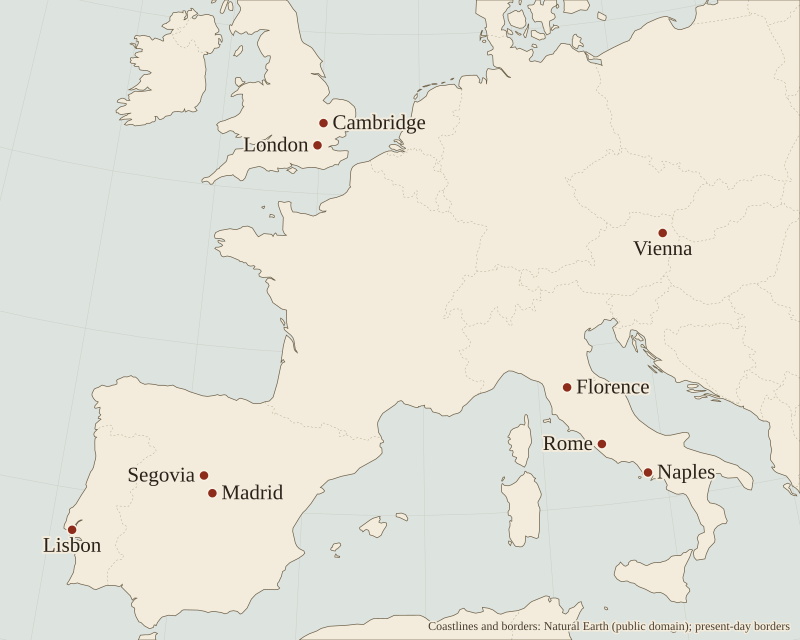

About and credits
This page needs no JavaScript. It is the plain version of the edition’s About page, which does, and gives the same text, without the citation pop-ups.
At a glance
A short guide to the people, words, dates and places that come up across the edition. Most lines carry a source; the essays below say more.
Who's who, then
- Alonso de Barros (c. 1540/52–1604), the game's author: a royal aposentador, one of the officials who found lodgings for the court, from 1563 until his death (Lucero 2019b, 34; Collar de Cáceres 2009, 82).
- Philip II, king of Spain, at whose court in Madrid the game is set; he died on 13 September 1598 (Lucero 2019d, 112 n. 28).
- Isabel Clara Eugenia (1566–1633) and Catalina Micaela (1567–97), Philip II's daughters. Catalina married the duke of Savoy in 1585 and left for Turin; the infanta who won at the goose game at Monzón that August was very probably Isabel (our inference) (Sánchez Belén n.d.; Espinosa Martín n.d.).
- Mateo Vázquez de Leca (c. 1542/44–91), probably born in Algiers, where his mother was held captive, though his origins were never fully cleared up; Philip II's secretary from 1573, Barros's patron and the book's dedicatee (Wilson 1968, 365; Lucero 2019d, 109 n. 21; Gonzalo Sánchez-Molero n.d.).
- García de Loaysa Girón (1534–99), royal almoner and, from 1585, tutor of the future Philip III, a post Mateo Vázquez helped him to; in 1598 archbishop of Toledo; to whom Barros dedicated his Proverbios morales, hoping for his support at court (Lucero 2019d, 104–5, 107, 111–12; Fernández Collado n.d.).
- Antonio Pérez (1540–1611), Philip II's secretary of state, Vázquez's great rival, arrested in 1579 after the murder of Juan de Escobedo (Escudero López n.d.; Lucero 2021, 137 n. 3; Bidwell-Steiner 2024, 210–11; Wilson 1968, 365).
- Mario Cartaro (Viterbo, 1540/45 – Naples, 1620), engraver, print dealer and mapmaker, who engraved the surviving board in Naples in 1588 (Seville 2026, 70 n. 16; Borroni 1977).
- Juan de Zúñiga Avellaneda y Cárdenas, sixth count of Miranda, viceroy of Naples between 1586 and 1595, and so the “His Excellency” whose privilege is engraved on the board of 1588 (our inference) (Rivero Rodríguez n.d.; board).
- Miguel de Cervantes, later the author of Don Quixote, and Pedro Liñán de Riaza, poets who wrote sonnets for the second edition (Lucero Sánchez 2016, 180–81 and n. 41; Lucero 2019b, 38–39).
- Alonso de Ercilla (1533–94), poet of La Araucana and from 1580 a censor of books for the Council of Castile, who approved the book for print (Wilson 1968, 367, 369; Oviedo Pérez de Tudela n.d.).
- Gonzalo de Liaño (“Gonzalillo”, d. 1588), the king's jester, and also his messenger and an agent for works of art between the Spanish and Medici courts, whose letter of 1585 shows the goose game at court (Infantes 2010, 134–35; Baranda Leturio 2010; Seville 2026, 69 n. 15; Kubersky-Piredda & Salort Pons 2011).
- Francesco de' Medici, Grand Duke of Tuscany, said to have sent the goose game to Philip II (Seville 2026, 69).
- Pietro Carrera, Sicilian writer on chess, who told that story in 1617 and named Barros's game (Wood 2019, 461; Seville 2026, 69; Collar de Cáceres 2009, 85).
- Mateo Alemán, author of the novel Guzmán de Alfarache, who called Barros his “other self”; Cristóbal Pérez de Herrera and Hernando de Soto, friends of Barros and writers of his circle (Lucero 2019d, 103, 109, 116).
- Pedro, Diego and Rodrigo, the three players of Barros's worked example in the second edition (Barros 1587, Madrigal ed., PDF 11–12).
- The printers: María Ruiz, “the widow of Alonso Gómez” (first edition, Madrid 1587), Pedro Madrigal (second edition, Madrid 1587) and Iosep Cacchij (third edition, Naples 1588) (Lucero Sánchez 2016, 174 n. 17, 176–79).
Who's who, now
- E. M. Wilson (1968) described the Cambridge copy and summarized the game in English (Wilson 1968, 363–71).
- Trevor J. Dadson (1987) edited the second edition, with a facsimile and a conjectural board designed by Víctor Infantes, who later wrote on the board and published the 1585 letter (2010) (Infantes 2010, 128–35).
- José Martínez Millán (1996), a historian of the court, placed Barros in a court faction (Martínez Millán 1996, 463–64; Díaz Gito 2020, 185).
- Fernando Collar de Cáceres (2009) published the Naples board (Collar de Cáceres 2009, 81–104).
- Manfred Zollinger (2010) identified the board independently (Ciompi & Seville, giochidelloca.it).
- Kelli Wood (2019) set it among the printed gambling games of Rome (Wood 2019, 453).
- Ernesto Lucero (2016–21) showed that the Lisbon copy is a separate edition and argued that it is the first; he edited the book (2019) and has written a series of studies of it (Lucero Sánchez 2016, 176–77, 179; Lucero Sánchez 2020, 12–13, 18).
- Marlen Bidwell-Steiner (2024) read the game as a lesson in casuistry and as a picture of a court of men (Bidwell-Steiner 2024, 195–96, 208).
- Adrian Seville (2026) used it to show how a game's book can carry its meaning (Seville 2026, 70).
Words
- aposentador: a royal official who found lodgings for the court; Barros's post (Lucero 2019b, 34). After 1561, lodging the court meant billeting courtiers on the householders of Madrid (Real Academia Española n.d.).
- arenillas: six dice marked on one face only, which the second edition allows instead of two ordinary dice (Barros 1587, Madrigal ed., PDF 11; Real Academia Española n.d.).
- board: the printed sheet the game is played on; for this game, Mario Cartaro's sheet of 1588, the only one known (Seville 2026, 70).
- castellanistas and papistas: the two court factions historians describe under Philip II; Vázquez led the first (Martínez Millán 1996, 463–64).
- consulta: a council's written report to the king on a petition, on which he wrote his answer (Lucero 2019b, 35–36).
- criado del Rey: “the king's servant”, Barros's title on the board (board).
- desengaño: disillusion; Mateo Alemán called the book a desengaño de pretensores, a disillusioning of office-seekers (Lucero Sánchez 2016, 170–71).
- edition: one printing of a book. This edition calls the three early ones G (Madrid, 1587, the widow of Alonso Gómez; the first), M (Madrid, 1587, Pedro Madrigal; enlarged) and C (Naples, 1588, Iosep Cacchij; issued with Cartaro's board) (Lucero Sánchez 2016, 177, 179).
- emblem: a motto, a picture and a verse, often with a prose commentary, that together teach a lesson; each pictured square of the board works like one (Lucero 2020, 117).
- emblem books: those the annotations cite. The ones printed after 1587 show how his contemporaries read a motif, not where he found it. Before 1587: Bernardino Daza's Spanish Alciato (1549) (Lucero 2019c, 824 n. 9), Pierio Valeriano's Hieroglyphica (Basel, 1556) (Valeriano 1556), Joannes Sambucus's Emblemata (Antwerp, 1564) (Collar de Cáceres 2009, 104), Hadrianus Junius's Aenigmata (1565) (Collar de Cáceres 2009, 103), and Juan de Borja's Empresas morales (Prague, 1581) (Lucero 2021, 135, 137; Borja 1581). After it: Juan de Horozco's Emblemas morales (Segovia, 1589) (Lucero 2021, 137), Cesare Ripa's Iconologia (Rome, 1593, without pictures; illustrated, Rome, 1603) (Biferali 2016), Hernando de Soto's Emblemas moralizadas (Madrid, 1599) (Collar de Cáceres 2009, 82) and Sebastián de Covarrubias's Emblemas morales (Madrid, 1610) (Real Academia Española n.d.).
- escudo, ducat, real, maravedí: coins and money of account of the time. In Castile the maravedí was the unit of account; a silver real was worth 34 maravedís, the ducat, no longer struck, was reckoned at 375, and the gold escudo had been worth 400 since 1566; a doubloon was a double escudo (García de Paso 2001, pdf 5, 8–9; Hernández n.d.) (see “Playing for money”).
- etching and engraving: the two techniques used on Cartaro's metal plate, an intaglio plate rather than a woodcut (Wood 2019, 463; Seville 2026, 66).
- the Favorite (privado): one close to power whose favor a petitioner must buy; on the board, square 26, where the petitioner pays for a hearing (Barros 1588, p. 28; board). Bidwell-Steiner places Barros's court at the beginnings of the system of validos, royal favorites (Bidwell-Steiner 2024, 209–10).
- filosofía: in the title, not the academic discipline but, by extension, a particular opinion or way of reasoning about a question, as an eighteenth-century dictionary of the Spanish Academy defines it (González Ramírez 2020, PDF 4) (see “Why ‘philosophy’?”).
- Game of the Goose: a race game from Italy, for two dice, on a spiral of 63 squares, which Barros adapted (Lucero 2020, 122; Lucero Sánchez 2020, 37).
- impression: one printed copy of a sheet.
- license and privilege: the royal permission to print and sell a work, granted here for ten years (Lucero 2019a, 198).
- memorial: a written petition to the king (Lucero 2019b, 34–35).
- merced: a grant made by the king's grace, not a wage owed for service (Lucero 2019c, 823, 829).
- patron (valedor): the protector who speaks for a petitioner.
- petitioner (pretendiente): one who seeks office or favor at court; the 1737 dictionary of the Spanish Academy also gives Latin procus, a wooer, among its equivalents (Real Academia Española 1737).
- pot (polla): the money in the middle, which the winner takes; stake (tanto): one counter of the value agreed before play (Barros 1587, Madrigal ed., PDF 11–12). Polla is also a pullet (our gloss), and Collar de Cáceres thinks the name probably etymological,
en su equivalencia sin duda a llevarse una pequeña oca
(no doubt as the equivalent of carrying off a little goose) (Collar de Cáceres 2009, 88). - princeps: the first edition.
- square: one of the 63 spaces of the board; Barros calls them casas, houses (Barros 1588, p. 25).
- suerte: a throw of the dice, and a lot in life; Barros plays on both senses.
- tasa: the official price set for a book (Lucero Sánchez 2016, 179, 181).
- Tacitism: the reading of the Roman historian Tacitus for lessons in politics; Lucero, after Antonio Álvarez-Ossorio, calls Barros's version a “reason of state of oneself” (Lucero 2021, 146).
Dates
| Year | Event |
|---|---|
| 1561 | Philip II settles his court in Madrid (Gloël 2017, 2–3) |
| 1563 | Barros succeeds his father as aposentador (Lucero 2019b, 34) |
| 1564–65 | Barros serves at the Peñón de Vélez de la Gomera, in Corsica and at the relief of Malta (Collar de Cáceres 2009, 82) |
| 1573 | Mateo Vázquez becomes Philip II's secretary (Wilson 1968, 365) |
| 1578 | Juan de Escobedo, secretary to don Juan of Austria, is murdered in Madrid (31 March) (Escudero López n.d.) |
| 1579 | Antonio Pérez and the princess of Éboli are arrested (28 July) (Escudero López n.d.) |
| 1580 | The union with Portugal strengthens the castellanista faction (Martínez Millán 1996, 464) |
| 1582–83 | Barros is passed over for a post in Guatemala and refused the assayership of the Segovia mint (Collar de Cáceres 2009, 82 and n. 10; Martínez Millán 1996, 463 n. 9) |
| 1585 | The jester Liaño's letter of 24 August shows the goose game at court. About now, Lucero writes, Vázquez's power begins to wane, the more so once the Junta de Noche is created, after the court's journey to Aragon that year (Infantes 2010, 134–35; Lucero 2019b, 37; Gonzalo Sánchez-Molero n.d.) |
| 1587 | Approval by Ercilla (13 January), royal license (9 February), first edition (colophon 17 February); the enlarged second edition; Barros's petition for the Silos office (March), granted by September; license for the Indies (17 November) (Lucero Sánchez 2016, 179, 189–90, 191; Lucero 2019b, 35–36; Collar de Cáceres 2009, 84) |
| 1588 | Third edition, in Naples, with Cartaro's board; in Rome, Gatti's Gioco della scimia; Barros is commissioned to inquire into the sales taxes of Talavera (Lucero 2019b, 47; Wood 2019, 475; Lucero 2019d, 107 n. 16) |
| 1591 | Mateo Vázquez dies (Lucero 2019d, 109 n. 21) |
| 1598 | Barros's Proverbios morales; Philip II dies on 13 September (Lucero 2019d, 104, 112 n. 28) |
| 1599 | García de Loaysa dies in February (Lucero 2019d, 112) |
| 1600 | The king refuses to let Barros pass his post to a man outside his family (Lucero 2019d, 119 n. 48) |
| 1604 | Barros dies in Madrid, in August (Collar de Cáceres 2009, 82, 100 n. 11) |
| 1605 | La pícara Justina, whose title-page engraving may parody the board (Rodríguez Mansilla 2019, 183) |
| 1612 | Careaga quotes the Labor couplets in his Desengaño de Fortuna (Wilson 1968, 370) |
| 1617 | Carrera names Barros's game as a variant of the goose game (Seville 2026, 69) |
| 1869 | The British Museum buys the board (British Museum 2012) |
| 1968 | Wilson describes the Cambridge copy (Wilson 1968, 363) |
| 1987 | Dadson's edition, with a conjectural board (Infantes 2010, 128–30) |
| 2008–10 | A blogger notices the board in the British Museum's online collection (2008); Collar de Cáceres and Zollinger identify it (Ciompi & Seville, giochidelloca.it; Infantes 2010, 130, 133) |
| 2016 | Lucero shows that the Lisbon copy, located in 2012 by María Cristina González Hernández, is a separate edition, and argues that it is the first (Lucero Sánchez 2016, 176–77, 179; González Hernández 2012) |
| 2019 | Lucero's critical edition (Lucero Sánchez 2020, 18) |
Places

Alonso de Barros
Alonso de Barros (c. 1540/52 – 1604)
Alonso de Barros came from a Segovian family tied to royal service (Lucero 2019b, 34). Lucero places it among the Segovian nobility (in a later article, the Segovian oligarchy), and notes that Barros still had varios negocios y propiedades que atender cuando no se ocupa del aposentamiento en Madrid
(various business affairs and properties to see to when he was not busy lodging the court in Madrid) (Lucero 2019c, 828; Lucero 2019b, 34; Lucero 2019d, 101). His father was Diego López de Orozco (Lucero writes Horozco), an attendant and aposentador of Charles V, and his mother Elvira de Barros; Alonso took his mother's surname (Collar de Cáceres 2009, 82; Lucero 2019c, 828). He was unmarried and left his estate to a nephew (Collar de Cáceres 2009, 82, 100 n. 11).
Office
In 1563, when his father died, Barros succeeded him as aposentador, one of the officials who arranged lodging for the court; Lucero notes that the court's recent settling in Madrid made the office especially necessary (Lucero 2019b, 34). Lucero counts more than four decades in the post, from 1563 to 1604 (Lucero Sánchez 2020, 22); Wilson, following Pérez Pastor, dates the appointment to 1569 (Wilson 1968, 369). Before settling in Madrid he served at the taking of the Peñón de Vélez de la Gomera (1564), in Corsica and at the relief of Malta (1565) (Collar de Cáceres 2009, 82; Wilson 1968, 369). Lucero judges his part in the wars, which his memorials cite, to have been seguramente discreta
(probably modest) (Lucero 2019b, 34), and adds that he traveled to Portugal with Philip II (Lucero 2019b, 40); the sources we cite do not date the journey.
The king had several aposentadores, under an aposentador mayor; they arranged lodging when the king, his family and his court came to a town (Real Academia Española n.d.). Once the court stayed in Madrid, the town's householders were bound to give up part of their houses, by rule a third, to the officials and courtiers billeted on them, and the burden was so resented that people built small houses that could not be divided, the casas a la malicia (Real Academia Española n.d.). Seen from the courtier's side, the office was one more door to wait at. In Antonio de Guevara's Menosprecio de corte (1539), as Marcos Méndez Filesi quotes it, the man who stays in his village need not seek a warrant to be lodged or wait on aposentadores, and the discontented courtier complains del aposentador que no le aposenta
(of the aposentador who does not lodge him) (Ciompi & Seville, giochidelloca.it).
He asked for more and was often refused. He was proposed in 1582 for a post of contador in Guatemala and not appointed; in 1583 the king declined to name him assayer of the Segovia mint, a post left vacant by the death of his brother-in-law (Collar de Cáceres 2009, 82 and n. 10; Martínez Millán 1996, 463 n. 9). His memorials, as Lucero reads them, cite his years of service and his soldiering, not his books (Lucero 2019b, 34). In 1587, weeks after the license to print this book, he petitioned for the escribanía mayor de rentas of the district of Santo Domingo de Silos, and received it in September (Lucero 2019b, 35–36). His petition first named the wrong town, Santo Domingo de la Calzada, and was corrected between the lines; Lucero allows that the slip may be merely anecdotal (Lucero 2019b, 36). Lucero sees Mateo Vázquez behind the grant but does not claim that the book alone won it (Lucero 2019b, 35–36). Summarizing the article in his thesis, he puts it more strongly: the book itself tuvo un papel decisivo para la obtención del favor de la escribanía de rentas
(played a decisive part in obtaining the grant of the revenue clerkship) (Lucero Sánchez 2020, 23), an office that, he adds, considerably increased Barros's yearly income. Martínez Millán dated the petition to October 1590 and the grant after it (Martínez Millán 1996, 463). Collar de Cáceres adds that Barros seems never to have gone to Silos, and that, as his nephew later claimed, he was paid nothing for the office from 1595 (Collar de Cáceres 2009, 82). In 1588 Barros also received a commission to inquire into the alcabalas (sales taxes) of Talavera, where García de Loaysa's family came from; Lucero, who cites the document, notes that it had never been mentioned before (Lucero 2019d, 107 n. 16).
Patrons
Barros dedicated the Filosofía cortesana to Mateo Vázquez de Leca, Philip II's secretary and the leader of the court faction historians call castellanista (Lucero 2019b, 37, 42; Martínez Millán 1996, 463–64). In the second edition, Madrigal's, Vázquez's coat of arms stood on the title page; the Naples edition dropped it (Lucero 2019b, 38–40; Lucero Sánchez 2016, 180). Lucero argues that the patronage ran both ways. From the early 1580s Vázquez had been turning his power into social standing, with a claimed descent from the Lecca of Corsica and the Colonna that his rivals attacked, and by about 1585, Lucero writes, his power was waning; the arms on the second edition belong to that campaign (Lucero 2019b, 37 and n. 13, 40, 42, 49). José Luis Gonzalo Sánchez-Molero, in the Real Academia de la Historia's biographical dictionary, reads the dedication the same way and sees Vázquez's power declining gradually between 1585 and 1588 (Gonzalo Sánchez-Molero n.d.). Lucero points out the paradox: the arms speak for nobility of blood, on the title page of a book whose board praises work (Lucero 2019b, 49; González Ramírez 2020, PDF 2). Vázquez signed himself “de Lecca y Colonna” from 1583, and Lucero thinks these Italian ambitions help explain why the book was reprinted in Naples (Lucero 2019b, 48–49). Bidwell-Steiner goes further: she calls Vázquez an Andalusian de ascendencia pobre y muy probablemente judía
(Bidwell-Steiner 2024, 210) (of poor and very probably Jewish ancestry) and an archetypal social climber (Bidwell-Steiner 2024, 210). That is her statement. Lucero is more guarded: he calls Vázquez a man de dudoso linaje
(of doubtful lineage) (Lucero 2019c, 822), records his rivals' constant attacks on his origins, and points to Vázquez's own concern to prove the purity of his blood (limpieza de sangre), on which a dedication addressed to him in 1583 insists (Lucero 2019b, 37 n. 13, 38 n. 15, 44 n. 33). Lucero does not say what descent his rivals alleged. Vázquez died in 1591 (Lucero 2019d, 109 n. 21). In 1598 Barros dedicated his second book to García de Loaysa Girón, tutor of the future Philip III, who became archbishop of Toledo that summer, lost his court offices within days of the new reign and died in February 1599 (Lucero 2019d, 104, 111–12). Loaysa had risen beside Vázquez: Vázquez, Lucero writes, helped him to the post of tutor to the prince in 1585, and in 1585–87, as the same dictionary records, Loaysa worked with Vázquez and the king's confessor on the choice of bishops (Lucero 2019d, 104–5, 107; Fernández Collado n.d.). When Barros asked leave, in 1600, to pass his post of aposentador to Diego López de Burgos, a man not of his family, the king refused: No conviene abrir puerta a esto cuando no es de padre a hijo, yerno o hermano
(it is not fitting to open the door to this unless it passes from father to son, son-in-law or brother) (Lucero 2019d, 119 and n. 48). Lucero reads Loaysa's death, which cost Barros the intercessor he had counted on, through Barros's own board: the Death of the Patron sends the player back to the start (Lucero 2019d, 119–20).
By 1598, Lucero finds, Barros had for years asked for no significant favor and had tacitly accepted his place at court, resigned or not (Lucero 2019d, 103–4). After Loaysa's death he made, in Lucero's phrase, a new beginning: he took part in the preliminaries of a work in honor of the duke of Lerma, the new king's favorite, before sending his last memorials, too late (Lucero 2019d, 116, 120). Lucero glosses the turn with one of Barros's own proverbs: Ni es malo darse a partido / el que no puede escaparse
(nor is it wrong to yield on terms / for one who cannot get away; our translation) (Lucero 2019d, 116 n. 45).
Writings
Barros published two books of his own: the Filosofía cortesana (1587) and the Proverbios morales (Madrid: Luis Sánchez, 1598) (Lucero 2019b, 34). The Proverbios hold 1,063 proverbs in octosyllabic verse (Lucero 2019d, 102 n. 3; Collar de Cáceres 2009, 83) and were reprinted many times, also as Perla de proverbios morales and Heráclito de Alonso de Barros, and in French (Collar de Cáceres 2009, 82, 100 n. 12; Wilson 1968, 363). Their opening lines make a game the figure of life itself: Aunque, si yo no me engaño, todos jugamos un juego
(although, unless I am mistaken, we all play one game) (Collar de Cáceres 2009, 84; Díaz Gito 2020, 185). From the early seventeenth century the two books were confused. Pérez Pastor gave two arguments for separating them; for Wilson the question was settled when Schevill and Bonilla printed Cervantes's sonnet from the Naples copy in 1922; and some writers still confused them in the twentieth century and after (Wilson 1968, 364–65; Lucero Sánchez 2016, 169–72; Martínez Millán 1996, 465 n. 17). Barros also wrote a printed Memorial sobre el reparo de la milicia on veterans' relief, and a short manuscript Discurso y difinición del privado, which treats the favor of a lesser person with a greater as a form of friendship (Collar de Cáceres 2009, 82, 84; Lucero 2019b, 40, 42). In the Memorial, Collar de Cáceres notes, the patron looks kinder than on the board: Barros asked for pensions for veterans and for a Protector or Defender of soldiers, who, en llegando alguno a la corte le tomasse sus papeles y encaminasse su negocio, si fuesse justo, y si no le moderase
(when one of them came to court, would take up his papers and steer his case, if it was just, and if not, would moderate it) (Collar de Cáceres 2009, 83–84). He wrote paratexts for friends: the Elogio of the author in Mateo Alemán's Guzmán de Alfarache (1599), a letter in Cristóbal Pérez de Herrera's Amparo de pobres (1598) and praise for Hernando de Soto's Emblemas moralizadas (1599) (Lucero Sánchez 2020, 22; Collar de Cáceres 2009, 82).
Friends
Alemán called Barros his otro yo
(Lucero 2019d, 116) (other self) in his prologue to the Proverbios (Lucero 2019d, 116). With Alemán and above all Pérez de Herrera, Barros took part in the reform of poor relief in the Madrid parish of San Martín (Lucero 2019d, 109; Cavillac n.d.). In his praise of the author in the Guzmán Barros explained Alemán's departure from royal service as a free choice to write; Michel Cavillac, in the Real Academia de la Historia's biographical dictionary, sets that beside the evidence that Alemán had had to resign his post as contador in 1593–94 (Cavillac n.d.). Soto, a contador and emblem writer, exchanged praise with him; Lope de Vega contributed a poem to the Proverbios (Lucero 2019d, 103, 116). Collar de Cáceres calls him a court bureaucrat with literary interests, close to Soto and Alemán (Collar de Cáceres 2009, 82). At his death his library held 151 volumes, studied by Trevor Dadson and Michel Cavillac (Collar de Cáceres 2009, 83; Dadson 1987; Cavillac 1998). Collar de Cáceres sums it up. It held many classical authors, aunque nada en latín ni griego
(Collar de Cáceres 2009, 83) (though nothing in Latin or Greek); books on morals, politics, war and history; fewer religious books than was then usual, with a certain Erasmian slant; and two books titled El cortesano, probably Castiglione's in Spanish and Luis Milán's. It held no emblem books, varios de los cuales es evidente que conoció
(Collar de Cáceres 2009, 83) (several of which he evidently knew). The inventory is not the whole story: it lists none of Barros's own books, and none by his friends except Pérez de Herrera's Discursos (Collar de Cáceres 2009, 83). Cavillac, reading it, found una forma de religiosidad interior que no se corresponde con su militancia
(Lucero 2019b, 40) (a form of inward religion that does not match his factional allegiance); Lucero grants that the list raises some doubts, but holds that there is ample reason to count Barros a client of Vázquez's network (Lucero 2019b, 40 n. 22; Cavillac 1998).
What the sources do not settle
- Birth. Nicolás Antonio gives Segovia, c. 1552 (Wilson 1968, 363). Collar de Cáceres gives c. 1542, after Dadson and Cavillac (Collar de Cáceres 2009, 82, 99 n. 7); Wilson had argued from his service in 1564–65 that he was born before 1552 (Wilson 1968, 369). Dadson proposed 1540 or 1545 (Lucero Sánchez 2016, 175 n. 23); Díaz Gito writes c. 1541–45 (Díaz Gito 2020, 184).
- Death. Collar de Cáceres gives the night of 17 August 1604, in Madrid, with the will opened on 18 August (Collar de Cáceres 2009, 82, 100 n. 11); Wilson, after Pérez Pastor, gives 18 August 1604 (Wilson 1968, 369), as does the Real Academia de la Historia's biographical dictionary, which adds that he was buried in the church of Nuestra Señora de Loreto (Montero Padilla n.d.).
- The Silos office: 1587 (Lucero, Collar de Cáceres) or 1590 (Martínez Millán), as above.
- The assayership of 1583. Martínez Millán writes that Barros sought the Segovia mint's assayership for his widowed sister; Collar de Cáceres calls that inexact and has him seek it for himself, as does Lucero (Martínez Millán 1996, 463; Collar de Cáceres 2009, 82, 100 n. 11; Lucero 2019b, 36 n. 10).
- Authorship. Martínez Millán and José Luis Gonzalo Sánchez-Molero suggested the work came out of Vázquez's circle; Lucero holds Barros's authorship beyond doubt while allowing that friends may have read the text (Lucero 2019b, 41). Martínez Millán went so far as to suggest that a royal commission Cervantes obtained that year came to him
como merced por su asistencia en el proyecto de la Filosofía cortesana
(Lucero 2019b, 41) (as a reward for his help with the Filosofía cortesana project), a help larger than the sonnet. Lucero answers that the first edition shows no trace of other hands beyond Barros's mention of the “sensible men” who had read it, and he gives two grounds for Barros's authorship:alguna referencia menor a su tierra que alguien foráneo quizá no tendría presente
(Lucero 2019b, 41) (a minor reference or two to his own region that an outsider might not have thought of) among the mottoes, and traces of Barros's reading and life in some emblems (Lucero 2019b, 41).
The court of Philip II and its petitioners
A court that stayed put
Philip II settled his court in Madrid in 1561 (Gloël 2017, 2–3) and made the Alcázar his principal residence (Morán Turina n.d.). A fixed court drew people who wanted something from the king, because the king was the source of gracia (grace, favor) (Martínez Millán 1996, 465–66). Collar de Cáceres, after Geoffrey Parker, names two of the courtiers' obsessions, boredom and promotion (Collar de Cáceres 2009, 82; Parker 1979).
Pretendientes and mercedes
A pretendiente (petitioner, office-seeker) was, in the 1737 dictionary of the Spanish Academy, one who seeks or solicits; a law it quotes, from the Recopilación, required petitioners at court to register their presence (Real Academia Española 1737). The Latin equivalents it gives, Petitor. Candidatus. Procus., span the word's range: a claimant, a candidate for office, and a wooer, so the same word could name someone courting a lady and someone courting the king (Real Academia Española 1737). English “suitor” carries the same double sense, but most readers now hear only the second; this edition says “petitioner”, which keeps the asking and loses the courtship. What they sought was a merced, a grant; for Barros it was most often a royal office (Lucero 2019c, 823; Lucero 2019d, 103). Lucero stresses that a merced was a gift of grace, not a wage owed for service, and that it was always scarce (Lucero 2019c, 823, 829). By 1593 the deceived petitioner was a stock figure of satire, as in Góngora's letrilla “Un buhonero ha empleado” (Gómez Canseco 2021, 430).
Petitions reached the king in writing. A petitioner sent a memorial, a written petition; the king's councils put the matter to him in a consulta, a written report; and the king wrote his answer on the papers (Lucero 2019b, 35–36 and nn. 6–7). Barros's own file shows the procedure. In March 1587 he petitioned for a revenue office in the district of Santo Domingo de Silos, vacant since its holder's death in 1576. The king asked why it had been vacant so long, whether he had been consulted on it before, and whether others wanted it. The answer, a consulta of 10 September, was that nobody had asked for it until Barros did, but that a memorial had since come in from the contador Juan de la Peña Zorrilla, who asked for the post after more than twenty-five years of service. Barros had the post, with a salary of 20,021 maravedís. Lucero thinks that Peña Zorrilla, whom Barros probably knew as a fellow Segovian, in the end tipped the balance in Barros's favor, and sees the hand of Mateo Vázquez behind it (Lucero 2019b, 35–36).
Cervantes, who wrote a sonnet for the second edition, knew the system from the petitioner's side. In 1587 he settled in Seville and earned his living as a royal commissary of supplies for the fleet the king was preparing against England, requisitioning grain and oil across Andalusia; in May 1590 he sent the king a memorial asking for one of the offices then vacant in the Indies, and on 6 June received the curt answer “Busque por acá en qué se le haga merced” (let him look for something here in which he may be granted a favor) (Riquer Morera n.d.).
Secretaries and favorites
Mateo Vázquez de Leca, the dedicatee, was secretary to Philip II from 1573 until his death in 1591 (Wilson 1968, 365, 367; Lucero 2019d, 109 n. 21). Lucero presents him as the model of the letrado, the official who rose by learning and effort rather than by birth, and as the patron of the castellanista party, the court faction described below (Lucero 2019b, 37, 42, 49). From the early 1580s he sought social standing to match his power, with a claimed descent from the Lecca of Corsica and the Colonna that rivals mocked; his power waned from about 1585, Lucero writes, and still more with the creation of the committee of ministers called the Junta de Noche (Lucero 2019b, 37). The Junta took shape after the court's journey to Aragon in 1585, by the end of that year at the latest; Vázquez sat in it, as its secretary, with Juan de Idiáquez, Cristóbal de Moura and the count of Chinchón, and the power it concentrated cost him influence (Gonzalo Sánchez-Molero n.d.; Baltar Rodríguez 2001–2002, 533–34).
Bidwell-Steiner places Barros's court at the start of the system of validos, royal favorites who became, in her phrase, “potent masters of intrigues” (our translation) (Bidwell-Steiner 2024, 209–10). On the board the Favorite is square 26, where the petitioner pays to be heard (board) (Collar de Cáceres 2009, 94). Barros's manuscript on the privado says: “I think that the favor the lesser wins with the greater is almost the same thing as the friendship struck between equals” (our translation); Collar de Cáceres finds this cynical (Lucero 2019b, 42; Collar de Cáceres 2009, 84).
Factions
Martínez Millán describes two groupings at Philip II's court. The castellanistas, formed after Cardinal Espinosa's death in 1572 under Vázquez's patronage, favored an intransigent religious policy and Castilians in the central offices; they opposed the papistas, the grouping around don Juan de Austria, Antonio Pérez and the princess of Éboli (Martínez Millán 1996, 463–64). Among the castellanistas he names the king's confessor, fray Diego de Chaves, and the count of Barajas, president of the Council of Castile; the Dominican order, he writes, broadly supported them, while the papistas had the backing of Pope Gregory XIII (Martínez Millán 1996, 463–64). Bidwell-Steiner counts the contest between these two factions as the most famous intrigue of the reign; on her account it ended with don Juan's envoy murdered in Madrid and Antonio Pérez ruined (Bidwell-Steiner 2024, 210). Wilson writes that Vázquez probably helped to bring about Pérez's disgrace, and Bidwell-Steiner that the plot was hatched by a group of castellanistas with Vázquez at their head (Wilson 1968, 365; Bidwell-Steiner 2024, 210). The envoy, Juan de Escobedo, was killed on 31 March 1578, and Pérez arrested on 28 July 1579 (Escudero López n.d.); square 43, the Change of Ministers, returns to these events. Pérez's case was still open while Barros wrote: an inquiry into his conduct in office ended in 1585 with his arrest, and in April 1590 he escaped to Aragon (Escudero López n.d.). On Martínez Millán's account the castellanistas peaked from 1578, gained with the union with Portugal in 1580 and began to decline in 1586–90 (Martínez Millán 1996, 464). Martínez Millán assigned Barros to them from his two dedicatees (Martínez Millán 1996, 463). He notes that Barros won his best economic advantages in the years when the group was at its height, and recalls Antonio de Guevara's rule that whoever lives at court, full as it is of passions and factions, must side with some and set themselves against others (Martínez Millán 1996, 463 n. 11, 464). Lucero accepts this and reads the board's praise of labor as the faction's ideology (Lucero 2020, 118), though he notes, with Patricia Marín Cepeda, that Cervantes and Liñán in the second edition's preliminaries show the factions were not sealed (Lucero 2019b, 39). Arthur Weststeijn finds the two-party model too rigid: he faults the approach of Martínez Millán and his colleagues for overlooking courtiers' changes of loyalty and the paramount importance of the king himself (Weststeijn 2008, 233). Bidwell-Steiner prefers a broader explanation, a change in codes of court sociability, to a factional one (Bidwell-Steiner 2024, 195–96).
Barros's squares map onto this world. The Change of Ministers (43) sends the petitioner back to Flattery (10) to court the new minister (Lucero 2020, 125). The Death of the Patron (46) sends the petitioner back to the start (Lucero 2021, 145). Lucero reads both as a warning against relying on a single patron (Lucero 2021, 145).
Women and the court game
Bidwell-Steiner points out what is missing from Barros's court: “all the pleasurable leisure of earlier court literature, such as theater, music, artful conversation and, above all, women” (our translation). In Luis Milán's El Cortesano (1561) talk between ladies and gentlemen still counted as part of court life; Barros's court is a world of men competing with men. She links the absence to the misogyny of anti-court writing, and to Mateo Vázquez's austerity, set against the notorious libertinism of his adversary Antonio Pérez (Bidwell-Steiner 2024, 208–11). Women were nonetheless among the first players of the goose game at the Spanish court. In 1585 the infanta was one of those who won forty escudos from the king's jester, and Philip II wrote to his daughter Catalina that her sister had become a gambler at a new game (Infantes 2010, 134 n. 22, 135; Wood 2019, 470). Neither letter gives her name, but the king was writing to Catalina Micaela, who had married the duke of Savoy at Zaragoza in March 1585 and entered Turin on 10 August (Espinosa Martín n.d.), so the sister turning gambler, and the infanta at Monzón, was very probably Isabel Clara Eugenia, then nineteen (our inference) (Sánchez Belén n.d.). In Italy, too, the goose was a game for men and women together: in a madrigal of Giovanni Croce's Triaca musicale (Venice, 1595) ladies and gentlemen play it and the ladies win; Wood calls it a polite game, the women must win in the name of courtly love
(Wood 2019, 470), and notes that women's gambling drew considerably more moral concern than men's. The first edition of the book itself was printed by a woman: María Ruiz, who ran her late husband's shop from 1584 as “the widow of Alonso Gómez”, the name on all of her more than forty known imprints, and was royal printer until 1595, when she stopped printing and probably died (Lucero Sánchez 2016, 174 and n. 17, 182; Biblioteca Nacional de España n.d.). And the word pretendiente, as the 1737 dictionary shows, could also name a wooer (see above).
A comparative frame: Biagioli's patronage economy
Mario Biagioli's study of Galileo at the Medici and papal courts (1993) gives a vocabulary for the same system, though his evidence is Florentine and Roman and a generation later than Barros. For Biagioli patronage was an institution without walls
(Biagioli 1993, 4); opting out of it was social suicide (Biagioli 1993, 16). Careers ran in jumps, broken by crises that usually followed a patron's death (Biagioli 1993, 30, 34). A prince's reward was not a debt: for a courtier to receive a reward from his prince was structurally analogous to a Christian's receiving grace from God
(Biagioli 1993, 51). He quotes Matteo Pellegrini's treatise on the court (1624): “it is in the royal interest to keep everybody suspended between fear and hope” (Biagioli 1993, 20). Friendship, amicizia, was part of the system: in Biagioli's account it was a contractual bond ritualistically represented as informal
(Biagioli 1993, 42), which is close to Barros's own definition of favor as friendship between unequals (see “Secretaries and favorites”; our comparison). Patronage, Biagioli argues, had periodical crises tuned to generational cycles that could be expected and intelligently bet upon
(Biagioli 1993, 36), yet the courtier Giovanni Ciampoli denied that anyone had invented a Political Astrology which would teach the regular periods of the wheel of fortune
(Biagioli 1993, 36, 322). The same question divides Martínez Millán and Lucero (see “Can Fortune be mastered?”; our observation). Biagioli cites Barros's game itself, at second hand from Parker, as a court game in which a patron's death sent the player back to the start (Biagioli 1993, 35; Parker 1979).
The parallel is ours to draw, not Barros's: Lucero's reading of the dice as the patron's will (Lucero Sánchez 2020, 26, 45) and Biagioli's reading of reward as grace describe the same structure, in which effort is necessary but not enough.
Notes on the sources
- Biagioli places the patron's death at square 43; the 1588 board and the rules put it at 46 (Biagioli 1993, 35; board; Lucero 2019d, 120 n. 49).
What kind of book?
Why “philosophy”?
The title uses filosofía in a wider sense than ours. David González Ramírez quotes the first abridged edition of the Spanish Academy's dictionary, an eighteenth-century work: the word por extensión se llama la opinión particular, o modo de aprehender o discurrir en alguna determinada cuestión o punto de esta ciencia
(by extension names a particular opinion, or way of grasping or reasoning about some given question or point of this science) (González Ramírez 2020, PDF 4). He sets Barros's cortesana beside two other “philosophies” of the decades before it, Juan de Mal Lara's “popular” one of 1568 (Filosofía vulgar) and Juan Pérez de Moya's “secret” one of 1585, books that gathered proverbial and mythological lore, and calls Barros's at once a literary toy and a practical manual of conduct at court (González Ramírez 2020, PDF 4; Martínez Millán 1996, 471 n. 45). Pérez de Moya was among the authors Barros favored, and Collar de Cáceres thinks the two men may have known each other (Collar de Cáceres 2009, 83, 100 n. 17).
Between the ideal courtier and the disillusioned one
Barros's book joined a crowded shelf. Manuel Antonio Díaz Gito, reviewing Lucero's edition, frames the book between two kinds of court writing (Díaz Gito 2020, 184–85). One is Baldassare Castiglione's Courtier (1528), read in Spanish from 1534 in Juan Boscán's version, whose new courtier followed the model of the perfect prince and orator, pertrechado ahora con las mejores armas del saber humanístico y la virtud como guía
(Díaz Gito 2020, 184) (equipped now with the best weapons of humanist learning, with virtue as guide), as Díaz Gito puts it (Díaz Gito 2020, 184). The other is satire. Antonio de Guevara's Menosprecio de corte y alabanza de aldea (1539) was perhaps, for Martínez Millán, the first book to set out the social rules of the court, and many others on the theme followed it (Martínez Millán 1996, 467); in such books, Díaz Gito writes, the court is painted “as a temple of Fortune, a well of vanity, corruption and vice” (our translation) (Díaz Gito 2020, 184–85). One of them, Cristóbal de Castillejo, wrote a dialogue on the court, Aula de cortesanos, whose lines on the competitors for office, donde tantos ha de haber / hambrientos competidores
(Lucero 2021, 141) (where there must be so many hungry competitors), Lucero quotes beside Barros (Lucero 2021, 140–41 and n. 7).
Where the Filosofía cortesana stands between the two is a question its readers answer differently. Díaz Gito places it between the courtesy book and the satire (Díaz Gito 2020, 185). Lucero, in his thesis, places it among books of avisos, practical warnings: it “shares numerous commonplaces with anti-court literature”, he writes, but not its “exclusively negative overall conception of the Court and its moral condemnation” (our translation) (Lucero Sánchez 2020, 27). For him it marks a turning point on the road from Castiglione's Courtier to Baltasar Gracián's Discreto: “a turning point at which the courtier's conduct looks for the first time to his interest alone”, in words he takes from Martínez Millán (our translation) (Lucero Sánchez 2020, 28, 43). Luis Gómez Canseco, reviewing Lucero's edition, describes the same shift: “the perfect courtier saw himself turned into a petitioner, the ideal of life bound up with chivalry gave way to the eagerness to rise, political prudence directed to the good was replaced by discretion, which looked to one's own benefit. In the background stood Machiavelli, wrapped in a convenient, Christianized Tacitus” (our translation) (Gómez Canseco 2021, 432–33).
Discretion, Fortune and Tacitus
Lucero's reading turns on two words. Prudence, a virtue, chooses only means that serve a good end; discretion, as the sixteenth-century writer Damasio de Frías defined it, handles the means to bad ends as well as good. It is discretion, not prudence, that Barros teaches (Lucero 2021, 140–41). The means his book names are liberality, flattery, diligence and labor, and Lucero notes that Barros sets out dissimulation and simulation openly as ways to rise at court (Lucero 2021, 146 and n. 21). He counts Barros among the second generation of Spanish Tacitists, readers of the Roman historian Tacitus, whose political thought he describes, after Antonio Álvarez-Ossorio, as a razón de Estado de uno mismo
(Lucero 2021, 146) (reason of state of oneself), joined to a Senecan acceptance of failure at court (Lucero 2021, 146). Lucero credits Martínez Millán as the first to set the book among court writings, emblems and Tacitist thought (Lucero 2021, 146 n. 21). Martínez Millán read it through two older traditions. One is the literature of Fortune, which he traces to fifteenth-century Castile, above all the reign of Juan II; Juan de Mena's Laberinto de Fortuna and the Marquis of Santillana's Bías contra Fortuna belong to it, and the life of Juan II's fallen favorite Álvaro de Luna, the subject of many works from the late fifteenth century on, servía como paradigma adecuado
(Martínez Millán 1996, 466) (served as a fitting paradigm). The other is the Tacitism and Neostoicism of Justus Lipsius (Martínez Millán 1996, 466 and n. 22, 467–69).
The tone is disputed too. Gómez Canseco hears under the moral una profunda y amarga sátira sobre la pretensión como modo de vida
(a deep and bitter satire on petitioning as a way of life) (Gómez Canseco 2021, 433). Díaz Gito finds a pessimistic view of the petitioner's life and a resigned pragmatism (Díaz Gito 2020, 184–85). Earlier, Marcos Méndez Filesi, who knew no goose board older than one printed in Venice in 1640, had judged that, set beside the fatalism of Guevara and Castillejo, Barros propone una filosofía algo más optimista
(Ciompi & Seville, giochidelloca.it) (Barros proposes a somewhat more optimistic philosophy), since labor can bring the petitioner to the palm (Ciompi & Seville, giochidelloca.it). Mateo Alemán's name for the book, desengaño de pretensores, the disillusioning of office-seekers, is the one most often repeated (Lucero Sánchez 2016, 170–71). Lucero himself calls it, in one article, a work of institutio, of instruction, that teaches while it entertains (Lucero 2019c, 828); in his thesis he writes that its form rules out reading it as institutio in the line of the Courtier (Lucero Sánchez 2020, 27).
Pictures that teach: the emblem
An emblem joined three parts: a motto, a picture and a verse, often followed by a prose commentary. The picture was a lesson, but also a puzzle the reader had to work out (Lucero 2020, 117; Lucero 2021, 135, 137). On Barros's board, Lucero shows, the square's name is the motto, the figure is the picture, and the couplets beneath it, with the prose in the book, complete the explanation (Lucero 2020, 117). The form was well known in Spain: Bernardino Daza's Spanish verse translation of Andrea Alciato's emblems had appeared in 1549 (Lucero 2019c, 824 n. 9). Yet when Barros published, Lucero notes, only one emblem book by a Spanish author had appeared, Juan de Borja's Empresas morales, and it had been printed in Prague; Juan de Horozco's Emblemas morales followed in Segovia in 1589 (Lucero 2021, 135, 137). Lucero therefore counts the Filosofía cortesana among the first Spanish emblem collections, and a rare one devoted to a single subject (Lucero 2020, 117; Lucero Sánchez 2020, 28). Borja, as Martínez Sobrino and García Román observe, stripped the emblem of play to give it more moral, political and spiritual weight; Lucero points out that Barros did the opposite (Lucero 2021, 137 n. 2). Lucero adds, in his own image, that it is “an emblem book that opens a seam along which the genre will run no further” (our translation) (Lucero 2019c, 828).
Emblems were also a courtly pastime in their own right. Lucero, after José Antonio Maravall, writes that Emblemas, enigmas, jeroglíficos y acertijos ponen el ingenio al servicio de la recreación del cortesano y de su aprendizaje por medio de imágenes, cauce que permite fijar con sencillez los conceptos más complejos a la memoria
(emblems, enigmas, hieroglyphs and riddles put wit at the service of the courtier's recreation and learning through images, a channel that makes it simple to fix the most complex ideas in the memory) (Lucero 2019c, 824 n. 9), and Mario Biagioli, writing about the Medici court, notes after Castiglione and others that skill in emblematics was a tool required of those who wanted to engage in courtly life
(Biagioli 1993, 111). Until the Naples board was found, the book's pictures were known only from their verses and Barros's prose; Víctor Infantes wrote about it under the title “La presencia de una ausencia. La Emblemática sin emblemas” (the presence of an absence: emblematics without emblems) (Infantes 1996; Infantes 2010, 129–30 and n. 12).
The Game of the Goose
Origins
Seville calls the game's beginnings “obscure” (Seville 2026, 64). The oldest notices he gathers come from Borso d'Este's Ferrara: a statute of 1463 for Argenta that forbids dice games, the goose among them, and a gift of two gold ducats in July 1465 to Borso's jester, Giovan Battista Scocola, “to play at the goose” (Seville's translation) (Seville 2026, 64). By then it was a gambling game, but Seville argues from its numbers, the 63 squares (the Grand Climacteric) and the geese set nine apart, that originally it was conceived as a representation of the spiritual progress of a human life
(Seville 2026, 64–65). Seville knows no board from those decades: the earliest that survive, he writes, are perhaps a century later: they are of wood, elaborately inlaid, and probably intended as diplomatic princely gifts
(Seville 2026, 64). Lucero takes a reversible chess-and-goose board in the Metropolitan Museum of Art for el primer tablero conservado, que data de la primera mitad del siglo xvi
(the first board preserved, which dates from the first half of the sixteenth century) (Lucero 2020, 120). The Museum dates it to the late sixteenth century and gives it to Gujarat, in western India: its design follows an Italian Renaissance print, but its inlay, of ebony, ivory, horn and gold wire, is likely Gujarati work (Metropolitan Museum of Art n.d.). Boards of such luxury materials were favorite Medici gifts, and Wood suggests that the board Francesco de' Medici sent to Philip II (see below) may have been one of these inlaid boards made in Gujarat for export (Wood 2019, 461–62); Liaño's letter of 1585 speaks of a game brought by a servant, not of a precious object (our observation) (Infantes 2010, 134–35).
From Florence to Madrid
Pietro Carrera, Il gioco de gli scacchi (Militello, 1617), wrote that the game was invented in Florence and that Grand Duke Francesco de' Medici sent it to Philip II (Seville 2026, 69). His words, as the page appears in a photograph posted to the Tarot History Forum in 2013 (our transcription; long s given as s) (Tarot History Forum 2013; Carrera 1617, 25):
E chiaro che gli huomini spiritosi dopo la prima inuentione della cosa sù l'istesso fondamento aggiungendo, ò mutando, ritrouano altre inuentioni, come è noto essere auuenuto al ritrouamento del gioco dell'Oca ne' tempi de' nostri padri, perchè questo gioco essendosi ritrouato in Firenze, e piacendo sommamente parue à Francesco di Medici grã Duca di Toscana di mandarlo alla Maestà del Rè Filippo II. in Ispagna, oue publicato diè materia à' buoni ingegni di ritrouarne altri poco differenti dal primo, fra' quali vi è il gioco detto la Filosofia Corteggiana ritrouato da Alonso di Barros spagnuolo.
(It is clear that men of wit, after the first invention of a thing, find other inventions upon the same foundation by adding or changing, as is known to have happened with the finding of the Game of the Goose in our fathers' time: for this game having been devised in Florence, and pleasing greatly, Francesco de' Medici, Grand Duke of Tuscany, thought fit to send it to His Majesty King Philip II in Spain, where, once published, it gave good wits the matter to devise others little different from the first, among which is the game called the Filosofia Corteggiana, devised by Alonso de Barros, a Spaniard.) Carrera gives no date for the gift (see the notes below). Domini observed that it was uncorroborated, though, as Lucero reports him, plausible (Collar de Cáceres 2009, 101 n. 36; Lucero 2020, 120 n. 7).
Seville points to Liaño's letter of 1585, and Wood to that letter and to the king's letter of the day before, as bearing out Carrera's account of the gift (Seville 2026, 69; Wood 2019, 470). On 24 August 1585, at Monzón, Gonzalo de Liaño (“Gonzalillo”), the king's jester, wrote to Francesco I cursing Luis Dovara, the Medici agent at the Spanish court, whom Francesco I had sent back to Spain in June 1585, or a servant of his (criado v. de Luys dObada
(Infantes 2010, 134): Seville reads Dovara himself as the grand duke's servant (Seville 2026, 70)) (Toccafondi Fantappiè 1992), for bringing a game of the goose played with two dice; the prince, the infanta and Luis Tristán had won forty escudos from him, and the king enjoyed seeing him stung (Infantes 2010, 134–35). In the same letter he writes that his wife is dying of fever and that el rey nunca me ha querido dexar partir
(the king has never been willing to let me leave) (Infantes 2010, 135): a court servant could not go home without the king's leave. The letter was found by Nieves Baranda, who counts Liaño among Philip II's many agents between the Spanish court and the other courts of Europe, recorded in Florence from 1579 as jester and royal messenger (Infantes 2010, 134; Baranda Leturio 2010); Seville and Wood cite a study of him as an art agent between the Spanish and Medici courts (Seville 2026, 69 n. 15; Wood 2019, 481 n. 69; Kubersky-Piredda & Salort Pons 2011). A day before, Philip II had written to his daughter Catalina that her sister had become a gambler at a new game brought by Gonzalillo: vuestra hermana se hace tahúr de un nuevo juego que ha traído Gonzalillo
(your sister is turning gambler at a new game that Gonzalillo has brought) (Infantes 2010, 134 n. 22; Wood 2019, 470, 481 n. 69). Wood takes the new game to be the goose game; Lucero calls this evidence from the letters indirect, though he thinks Carrera's story probably true (Wood 2019, 470; Lucero Sánchez 2016, 177 n. 36).
The standard game
Lucero reconstructs the rules then current (Lucero 2020, 122–24). Players race along a spiral of 63 squares by the throw of two dice (Lucero 2020, 122; Wood 2019, 458). A goose doubles the throw; the geese run in two series of nines, from 5 and from 9 (Lucero 2020, 122). A first throw of 9 goes at once to one of the two dice squares, 26 or 53, so that nobody can run the geese to victory on the first throw (Lucero 2020, 122–23). There are hazards: the Bridge (6), Inn (19), Well (31), Labyrinth (42), Prison (52) and Death (58), which sends the player back to the start (Collar de Cáceres 2009, 102 n. 68; Wood 2019, 458). Many hazards demand a payment to the pot (Seville 2026, 66). A player who lands on an occupied square displaces its occupant (Lucero 2020, 122). The last square must be reached exactly; an overthrow counts back (Wood 2019, 458).
The game the jester Liaño described from Philip II's court in 1585 had some of these features. In it a player who lands on the bridge puts in a real, el que esta en la hostedía juega dos vezes
(Infantes 2010, 135) (whoever is at the inn plays twice), and there are dos pozos y muerte que se vuelve a jugar de nuevo
(two wells, and death, after which one plays again from the start) (Infantes 2010, 135). Barros's rules use the same words for two of his squares: at Fortune (51) the player juega dos vezes, and from the Death of the Patron (46) the player buelue a come[n]çar el juego de nueuo (our observation) (Barros 1588, pp. 61–62). Liaño does not say whether “plays twice” at the inn meant an extra throw.
What Barros kept and what he changed
Lucero lists what Barros kept: the 63 squares on a spiral, the rebound, the ban on two players sharing a square, mechanical squares, and payments to the pot or to other players (Lucero 2020, 125). Lucero ties the number 63 to the ages of man. Barros calls the squares the years of life spent on a petition, and Pedro Mexía's Silva de varia lección, a book Barros knew well, says of the climacteric years that el más temido de todos era el año sesenta y tres
(the most feared of all was the sixty-third) (Lucero 2020, 125 and n. 15).
What changed (Lucero 2020, 124–25):
- the geese became oxen, the squares of Labor, at 4, 12, 17, 23, 30, 34, 41, 48 and 57, in no numerical pattern; Barros says their placing keeps no order, because the matter has none;
- Death became the Death of the Patron and moved to 46;
- the Dice stand at 28 and 53, not 26 and 53, without the first-throw rule;
- Fortune (51) gives a second throw, so that a double six from 51 reaches 63.
Barros also dropped the Prison and the Labyrinth (Lucero 2021, 144 n. 15). His Well of Oblivion costs a lost turn and payments, where the goose-game Well holds a player until another falls in (Collar de Cáceres 2009, 95). He did not use the goose rule of jumping from one dice square to the other (Collar de Cáceres 2009, 95). Lucero thinks Barros knew the goose game only partly, and emptied its numbering of symbolic sense por puro desconocimiento, a buen seguro
(out of plain ignorance, surely) (Lucero 2020, 121, 126); in the sequel he hedges: probablemente por desconocimiento o quizá por interés
(probably out of ignorance, or perhaps by design) (Lucero 2021, 135).
Later themed geese
Carrera said that the game's publication in Spain led others to invent variants a little different from the original, among which was the game known under the name of the Filosofia cortesana invented by Alonso de Barros of Spain
(Seville 2026, 69). Seville places Barros's game first among early themed variants; his next example is Le Ieu Royal de Cupidon (Paris, c. 1640) (Seville 2026, 68, 73). A Spanish-language version of that Cupid game, printed in Antwerp by Pieter de Jode and studied by Marjolein Leesberg as El Juego Real de Cupido (c. 1620), was closely copied, Seville writes, from Petit's sheet or an unknown French example; the surviving Paris print is later than the game, which Seville thinks older (Seville 2026, 73 and n. 20, 76 and n. 22; Wood 2019, 479 n. 11; Leesberg 2015); in the sources we cite it is the next themed goose in Spanish after Barros's. In Rome, Altiero Gatti's Gioco della scimia (1588) replaced the goose with a monkey; Wood reads it as a carnival inversion of moralizing games such as Barros's: a monkey bares its behind on square 9, the best opening throw, another holds a mask up to Death on 59, and the publisher signed himself as a frightened cat among mice, a pun on his name, gatto (Wood 2019, 475–77). Wood gives Lucchino Gargano's sheet (Rome, 1598) as the earliest surviving one titled a Game of the Goose (Wood 2019, 454). Thematic geese later multiplied; Collar de Cáceres cites d'Allemagne's ten groups and boards of up to 300 squares (Collar de Cáceres 2009, 86, 102 n. 55).
Across Europe
Manfred Zollinger dates the spread: “After 1585, the Bolognese scholar Ulisse Aldrovandi gives the rules of this game, which is already fairly widespread in Italy and even has regional variants. From that time a remarkable diffusion can be seen: outside Italy, the game appears in Spain (1587), in Bavaria (1589), in England (1597) and in France (1597 or 1598)” (our translation) (Ciompi & Seville, giochidelloca.it; Zollinger 2010). Aldrovandi, Wood adds, called it a game of pure chance, invented for pleasure and play (Wood 2019, 461). Collar de Cáceres lists early witnesses: an entry of 16 June 1597 in the register of the Stationers' Company in London, to John Wolfe, for “the new and most pleasant game of the goosse”; a board printed in Lyon c. 1597–1601 by the heirs of Benoît Rigaud; a printed catalog of the Roman print-sellers Michelangelo and Andrea Vaccari of 1614; and the note of Jean Héroard, physician of the young Louis XIII, that on 26 April 1612 the boy played at the goose (Collar de Cáceres 2009, 85). In Spain, Lucero sets Barros's game far earlier than the Balearic goose board from the Guasp press, dated c. 1652 (Lucero Sánchez 2020, 37).
Myths of origin
Readers who look for the game's origins will meet many stories: the Greek hero Palamedes, the Phaistos disc, a Chinese game of the Ming dynasty known as the promotion of the mandarins, a spiritual map of the road to Santiago linked to the Templars. Lucero lists them and sets them aside as outside his subject (Lucero 2020, 119 and n. 4). He does reject one modern claim, that Barros called the game the invention of a heretical Protestant sect: Barros never said so (Lucero 2020, 119 n. 4). Collar de Cáceres says he cannot confirm María José Martínez Vázquez de Parga's thesis that an older, non-spiral form of the game is the one shown in four red panels on a table in Pieter Bruegel the Elder's Triumph of Death (c. 1568) (Collar de Cáceres 2009, 85, 101 n. 41).
Notes on the sources
- Carrera's date for the gift: Collar de Cáceres gives c. 1576, and Infantes, reporting the same passage, c. 1567; Lucero, after another report of it, gives c. 1580 (Collar de Cáceres 2009, 85; Infantes 2010, 134; Lucero Sánchez 2016, 177 n. 36). The page as transcribed above says only “in our fathers' time”. Bidwell-Steiner, after Seville's book of 2019, dates the gift to 1585, from Carrera and the jester's letter together (Bidwell-Steiner 2024, 196).
- Zollinger (2010) cites Thierry Depaulis for the oldest specimen of the game then known, which takes it back, he writes, to the first decades of the sixteenth century, and adds that documents multiply only from the 1580s (Ciompi & Seville, giochidelloca.it; Depaulis 1997); compare Seville's dating of the earliest surviving boards (see “Origins”). The sources we cite do not describe Depaulis's specimen.
- Wood's text says the royal children lost the forty escudos, but the Spanish she quotes says Liaño lost them (Wood 2019, 470, 481). She also calls the third player
court painter Luis Tristàn
(Wood 2019, 470); the painter of that name was born in 1580/1585 (museodelprado.es), so the player of 1585 was someone else (our inference). - Bidwell-Steiner calls Liaño a portero de Cámara, a doorkeeper of the king's chamber (Bidwell-Steiner 2024, 196).
- Infantes and Seville name Francesco I as the addressee of the letter of 1585; the report by Nieves Baranda that first made it known speaks of Liaño's letters to the Grand Duchess (Infantes 2010, 134 and n. 23; Seville 2026, 69; Baranda Leturio 2010).
The three editions
Three editions in a year
Three early editions are known, each in a single copy (Lucero Sánchez 2016, 177). Lucero Sánchez showed in 2016 that the Lisbon copy belongs to a separate edition, and argued that this edition of the widow of Alonso Gómez is the first and that Madrigal's is an expanded second edition in which Barros took part or consented (Lucero Sánchez 2016, 169, 179, 191). Among his reasons: G's first gathering, signed with pilcrows, was printed after the text, as the law of 1558 required of preliminaries, and its title page leaves the price blank because the official price (tasa) had not arrived in time; M prints the price on its title page (Lucero Sánchez 2016, 179, 181). C follows M in its preliminaries and text, but in the closing rules it follows G (Lucero Sánchez 2016, 180 and nn. 42–43).
Lucero suspects a bookseller behind the change of printer: Blas de Robles, uno de los tres libreros que financian habitualmente a María Ruiz
(one of the three booksellers who regularly financed María Ruiz) (Lucero 2019b, 39), for whom alone Pedro Madrigal worked from 1586 to 1588, and who had made Cervantes's La Galatea possible two years before. Robles or Madrigal, he thinks, may also have brought Cervantes to write the sonnet (Lucero 2019b, 39; Lucero Sánchez 2016, 180). Madrigal had only just set up at court, with the equipment of Domingo de Portonariis's Salamanca workshop (Lucero Sánchez 2016, 179–80).
| Edition | G | M | C |
|---|---|---|---|
| Date | Madrid, 1587; colophon 17 February 1587 | Madrid, 1587 | Naples, 1588 (title page undated; colophon 1588) |
| Printer | María Ruiz, widow of Alonso Gómez | Pedro Madrigal | Joseph (Iosep) Cacchij |
| Format | 8º, 27 fols. | 12º, 48 fols. (A–D¹²) | 12º, 64 pp. |
| Copy | Lisbon, Biblioteca Nacional de Portugal, RES. 6563/4 P., in a composite volume | Cambridge, Emmanuel College Library, 326.6.108 = Adams B. 253 | Vienna, Österreichische Nationalbibliothek, 35 V 49 |
| Contents | approval (Ercilla, 13 Jan. 1587), license (9 Feb. 1587), dedication to Vázquez, text, short rules (“Esto se juega en esta forma”); no sonnets, no prologue; price left blank | adds sonnets by Liñán de Riaza and Cervantes, prologue “Al lector”, Vázquez's arms on the title page, a woodcut of Fortune with its description, additions to the text, “Declaración del juego y orden de jugarle” with a worked example; “Tassado en medio Real” | M's preliminaries and text, cut in places; no arms and no Fortune woodcut; M's Declaración replaced by short rules like G's (“EL YVEGO SE juega en esta forma”); Poverty at 60 as in M |
| Board | none known (Lucero infers one) | none known (Lucero infers one) | Cartaro's sheet, British Museum 1869,0410.2463.+ |
Sources for the table: (Lucero Sánchez 2016, 176–81, 189–91; Seville 2026, 70, 72; Wilson 1968, 365; Infantes 2010, 128–29; Barros 1588, sig. A1r). The Vienna copy belonged to Alonso Medrano (Collar de Cáceres 2009, 84 and n. 29); the Cambridge copy was bequeathed by John Breton, Master of Emmanuel (Wilson 1968, 365). Wilson describes it as bound in vellum and measuring 11.4 × 6.7 cm. Breton entered Emmanuel in 1629, became its Master in 1665 and died in 1676; an inscription at the head of the title page, hard to read, may say, Wilson suggests, 'Missionis . . . soc. Iesv.'
(Wilson 1968, 365), which would point to a Jesuit owner (our inference). How the book came to England, the sources we cite do not say.
Lucero judges that C's cuts were decisions of the Naples workshop, not of Barros (Lucero 2019b, 48 n. 45), and that the Naples printer had both Madrid editions in front of him (Lucero 2019a, 203 n. 13). After the two Madrid editions the book was not printed again in Castile (Lucero 2019b, 47).
Ghosts
The story of the first edition's disappearance and recovery is Lucero Sánchez's (Lucero Sánchez 2016, 174–77), and we follow it. Tamayo de Vargas and Nicolás Antonio recorded an edition of 1587 printed by Alonso Gómez (Tamayo: “Madrid por Alonso Gomez 1587”); because Gómez had died in 1584, later bibliographers doubted it, and Ticknor's translators printed the date as 1567, a misprint that lived on in the bibliographies (Lucero Sánchez 2016, 174–76). Wilson in 1968 treated the Gómez imprint as a mistake (Wilson 1968, 364). The Lisbon copy shows that the widow's shop printed it (Lucero Sánchez 2016, 174–77). Lucero tracked that copy down through library catalogs, but he says plainly that its rediscovery no nos corresponde, o al menos no en sentido estricto
(Lucero Sánchez 2016, 176) (is not ours, or at least not strictly). María Cristina González Hernández had located it correctly in 2012, in her doctoral thesis on Tamayo de Vargas's Junta de libros; Manfred Zollinger had already listed both 1587 copies in 2010, but took them for copies of the same Madrigal edition (Lucero Sánchez 2016, 176–77; González Hernández 2012; Zollinger 2010). Lucero's comparison of the texts showed that they are two editions, and he argues that the widow's is the first (Lucero Sánchez 2016, 177, 179). An Indies license of 17 November 1587 allowed Barros to print and sell in the Americas la dicha pintura y moralidad della
(Lucero 2019a, 200) (the said picture and its moralization) (Collar de Cáceres 2009, 84, 101 n. 30; Lucero 2019a, 200). Whether an Indies edition followed, the sources we cite do not say. José Toribio Medina thought that nearly the whole edition had been shipped to the Indies, which would explain why no copy was found in Europe (Lucero Sánchez 2016, 177 n. 35; Lucero 2019a, 199).
Three boards, two lost
The license covers a picture on a large sheet with a separate moralization (Lucero 2019a, 198). M says the picture travels apart from the book (Barros 1587, Madrigal ed., PDF 11). Neither Madrid copy keeps a board. Dadson took the lack of copies, and of boards, as a sign of heavy use (Lucero Sánchez 2016, 177); Lucero thinks loose sheets not bound with the text were simply lost (Lucero 2019a, 198). He also accounts for the short run of printings: a fashion newly arrived from Italy created the need for a pocket guide, and as the game's rules became common knowledge the guide lost its use (Lucero Sánchez 2016, 177–78).
Lucero argues that each Madrid edition had its own board (Lucero 2019a, 203). G twice places Poverty at 59, not 60, and has different Labor verses, so its board must have differed from Cartaro's (Lucero 2019a, 203–04); M's changed description of the central sea (it adds a patient angler) suggests a new plate, close to the Naples one but not identical (Lucero 2019a, 205–06). Lucero adds an argument from price. Madrigal's edition was priced at half a real for its four printed sheets. The workshop's usual price in 1580–90 was three maravedís a sheet, and even Hernando de Soto's illustrated Emblemas moralizadas reached only three and a half por causa de las estampas que tiene
(Lucero 2019a, 201) (because of the prints it has). Only an engraved sheet sold with the book, he argues, explains the cost (Lucero 2019a, 201–02 and n. 10). His thesis states the claim in two forms: two boards, one for each Madrid edition (Lucero Sánchez 2020, 20), and, in its conclusions, at least one board with small differences for G and perhaps one very like Cartaro's for M, judging by the book's price (Lucero Sánchez 2020, 43–44). Infantes, before G was found, thought the Naples board might copy a lost Madrid one (Infantes 2010, 135). He also held that Barros had an Italian model: Parece obvio suponer que Barros manejó un tablero editado en Italia anterior a 1587, que es de donde toma los elementos iconográficos
(Infantes 2010, 134) (it seems obvious to suppose that Barros used a board printed in Italy before 1587, from which he takes the iconographic elements), a board that might have reached Madrid with the goose game itself (Infantes 2010, 134–35). The sources we cite identify no such board.
Modern editions
- Trevor J. Dadson, ed., Madrid: Comunidad de Madrid, 1987, for the fourth centenary: study and transcription, facsimile of the Emmanuel copy of M, and a conjectural board, in a slipcase, 500 numbered copies not for sale (Dadson ed. 1987; Infantes 2010, 128–30; Lucero Sánchez 2020, 16). The board was Víctor Infantes's design. It set the 63 squares out as an even grid on a 500 × 340 mm sheet, with Barros's verses and their instructions set at the matching numbers and an arrow to mark which way to read; its one picture, at the head of the sheet, was the book's two-faced Fortune with her motto. Infantes also records the three inks and the light ochre laid paper, and says he deliberately took no images from the emblem books (Infantes 2010, 129–30). Collar de Cáceres later objected that such a grid does not allow for the game's descent from the goose game, which runs in a spiral; he credited the board to Dadson, and Infantes explains that he had made it himself (Collar de Cáceres 2009, 84–85; Infantes 2010, 132). Paula Lupiáñez López later made an art-school reconstruction, with pictures of her own and with board, dice and book kept together in a box (Infantes 2010, 130, 132).
- Luigi Ciompi and Adrian Seville, online modernized transcription on giochidelloca.it, taken from Dadson, with many errors, Lucero says; Marcos Méndez Filesi reproduced it online in 2010 (Lucero Sánchez 2016, 173 n. 14). This edition reproduces its Spanish for the passages of M (see the editorial note).
- Javier Blasco, ed., Valladolid: Agilice Digital, 2014, an ebook that Lucero finds derivative of Ciompi and Seville and full of errors (Blasco ed. 2014; Lucero Sánchez 2016, 173 n. 14; Lucero Sánchez 2020, 17).
- A facsimile of the Naples board, Madrid: Biblioteca Nacional, 2016, cited by Rodríguez Mansilla; we have not seen it (BNE facsimile 2016; Rodríguez Mansilla 2019, 188, 193).
- Enrique Suárez Figaredo, ed., a paleographic text of C, Lemir 23 (2019): 203–226 (Seville 2026, 72 n. 19; Lucero Sánchez 2020, 17 n. 2; Suárez Figaredo 2019).
- Ernesto Lucero, ed., Madrid: Polifemo (Biblioteca Áulica 1), 2019 (the publisher's page gives 2020): a critical edition on the base text of M, collating G and C, with a study, notes and a nearly full-size color reproduction of Cartaro's board (Lucero ed. 2019; Lucero Sánchez 2020, 18; Gómez Canseco 2021, 431; González Ramírez 2020, PDF 4; Díaz Gito 2020, 185; Polifemo, catalog page).
This edition
Our text is a new diplomatic, that is letter-for-letter, transcription of C, set beside a new transcription of Cartaro's board, with M's and G's readings reported where they differ. The Spanish of M's passages is reproduced from Ciompi and Seville's modernized transcription, and G's readings are quoted from Lucero's collation. The switch between G, M and C changes the texts shown and, under G, the square of Poverty. See the editorial note, “How this edition was made”.
Notes on the sources
- Collar de Cáceres calls M an octavo, against the duodecimo of Wilson and Lucero (Collar de Cáceres 2009, 84).
- For G's extent the table follows Lucero's “8°, 27 fols.”; the Lisbon catalog record he quotes gives “[4], 22, [2] p.; 8º” (Lucero Sánchez 2016, 176, 179).
- Lucero 2016 describes Dadson's edition as two volumes; Collar de Cáceres and Lucero's thesis describe three (Lucero Sánchez 2016, 173; Collar de Cáceres 2009, 99 n. 3; Lucero Sánchez 2020, 16). Infantes, who made its board, gives three volumes in a note but describes two, of study and of facsimile, with his board added as a separate folded insert, all in a slipcase (Infantes 2010, 128 n. 5, 129–30). Seville calls its facsimile one of the Naples edition (Seville 2026, 72 n. 19); the other sources say Madrigal.
The board of 1588
Maker and making
The sheet is signed at lower right “Marius·Cartarius.Jnc Neap·1588·”: Mario Cartaro engraved it (incidit) in Naples in 1588 (board) (Collar de Cáceres 2009, 86). Seville's note on Cartaro, which he credits to the British Museum catalog, reads Engraver, print dealer and publisher, from Viterbo, b.1540/5 active in Rome 1557-1586/8 and in Naples by 1588
(Seville 2026, 70 n. 16). Wood says that he moved to Naples in 1586 to complete maps of the Kingdom
(Wood 2019, 462); the Treccani biography records that the Regia Camera of Naples employed him from 1586 to draw maps, and that he died in Naples on 16 April 1620 (Borroni 1977). By 1597 he was an engineer of the city, and his map of the whole Kingdom, printed in 1611, was withdrawn from circulation and has not been traced (Borroni 1977). Zollinger describes him as the viceroy's cartographer (Ciompi & Seville, giochidelloca.it). Collar de Cáceres lists his work: the print of Vignola's design for the façade of the Gesù (1573), celestial maps, a terrestrial globe, maps of Rome, Perugia and Naples, and religious prints (Collar de Cáceres 2009, 102 n. 65). Bartsch's catalog of his prints does not include the board (Collar de Cáceres 2009, 102 n. 64).
The technique is etching and engraving on a single sheet of paper, 531 × 404 mm (Wood 2019, 463; British Museum n.d.). Wood gives the usual size of printed boards as roughly 35–40 by 46–53 cm, printable on a royal folio and trimmed; this sheet is at the top of that range (Wood 2019, 479 n. 20). Lucero notes that Italian engravers were prized for their etching, while Spanish emblem writers complained of Castilian block-cutters (Lucero 2019b, 48).
Two privileges and three languages
The title runs along the top and ends at lower right: “FILOSOFIA CORTESANA DE ALONSO DE BARROS CRIADO DEL REY N[UEST]RO S[EÑ]OR”, with “Con su priuilegio” beneath (board). A second line grants a privilege of His Excellency, the viceroy, for ten years in the Kingdom of Naples (board) (Ciompi & Seville, giochidelloca.it). Lucero points out that the royal license of 1587 was not limited to Castile but covered all the king's realms, while the sheet declara depender de un privilegio de Alonso de Barros para el «Regno di Napoli»
(declares that it depends on a privilege of Alonso de Barros for the Kingdom of Naples) (Lucero 2019b, 48 n. 45). The verses of the squares are in Italian above and Spanish below (Collar de Cáceres 2009, 86, 91). The rule labels above the hazards are in Italian, and only the Well's is in both languages (Ciompi & Seville, giochidelloca.it; board). Lucero lists what is in one language only: the corner mottoes in Spanish, the swan's Latin “Nosce te ipsum”, the Italian “Guarda l'fine” at the gate, the title in Spanish (Lucero 2019a, 203 n. 14). He takes the bilingual text as aimed at the Spanish colony in Naples and at local courtiers, and as evidence that Cartaro copied an earlier print (Lucero 2019a, 203 n. 14).
Naples was then a kingdom of the Spanish crown, al fin y al cabo territorio de la corona
(Lucero 2019a, 203) (territory of the crown, after all), in Lucero's words (Lucero 2019a, 203 n. 14). Zollinger describes the second privilege as that of the king's representative, the viceroy, and Cartaro as the viceroy's official cartographer (Ciompi & Seville, giochidelloca.it). In 1588 the viceroy was Juan de Zúñiga Avellaneda y Cárdenas, sixth count of Miranda, who held the office between 1586 and 1595 (Rivero Rodríguez n.d.). Lucero gives three reasons for printing in Naples: Italian engravers were prized for their skill with etching, the goose game itself was Italian, and, finally, Vázquez was interested in Italy and in proving his Italian lineage (Lucero 2019b, 48–49). Wilson remarks that Apparently the Italian printer had no ñ in the fou[nt] [in] which the poem is set
(Wilson 1968, 364), so that Cervantes's sonnet reads “sennalarse” and “pequenna” (in the Vienna copy both words are blotted; our transcription reads señalarse[?]{es} and pequenna[?]{es}) (Wilson 1968, 364–65).
Layout
A gate at bottom left leads to square 1, the peacock; the numbers run counter-clockwise along the bottom, up the right side, across the top and down the left, then turn inward in a second ring to the palm at 63 (board) (Wood 2019, 462–63). Balusters divide the bays, as on other Italian goose boards; Collar de Cáceres sees in the spiral of balusters the spokes of Fortune's wheel (Collar de Cáceres 2009, 88, 90). Each bay with a picture has it above and, where the square has one, a heading and two couplets below; lettering reads from outside the track, so the top row is upside down for a player seated at the foot of the sheet (our observation) (board). The nine Labor squares show yoked oxen under hanging fruit (Collar de Cáceres 2009, 91). Most other squares carry only a number and a plant (our observation) (board).
The four corners hold a dolphin wound round an anchor, “Date prisa a espacio” (make haste slowly), top left; a half-reclining woman with a single forelock, Occasion, “No me pierdas” (don't lose me), top right; a hand pointing to a clock, “Haesta la postrera” (until the last), bottom right; and the entrance gate with the swan on a skull, bottom left (board) (Collar de Cáceres 2009, 92–93). The engraved forms are “Dateprisa aespacio” and “Haesta la postrera”; Lucero and Collar de Cáceres print “Date prisa despacio”, and Collar reads “Ha esta la postrera” (board) (Lucero 2019a, 203 n. 14; Collar de Cáceres 2009, 92–93). Barros's text explains only three corner figures (Barros 1588, p. 51). The center is the Sea of Suffering: ships, a galley, an angler, a net-fisher, fish and sea monsters (board) (Collar de Cáceres 2009, 99). Wood compares its sea monsters to those of maps, fitting Cartaro's trade (Wood 2019, 466). Rodríguez Mansilla notes that the contemporary Italian goose boards reproduced by Infantes share the spiral but have no sea at the center (Rodríguez Mansilla 2019, 190).
Board and book
The board does not carry the rules in full: Lucero points out that Barros put no summary of rules on the sheet, so the book was needed (Lucero 2019a, 202). What the board has are short labels (“Paga”, “Alla sorte ·n·° 28 ·Paga”, “Giuoca ·2· uolte ·”) (board). Some Italian goose sheets did the same, giving their rules in a few words on the active squares, such as “paga e sta sin un ti cava” (pay and stay until someone comes to release you, in Seville's translation) for the prison, and others left them out, while the French tradition put the full rules in a central oval on a sheet printed in landscape, a format Zollinger finds only in French goose games (Seville 2026, 66; Ciompi & Seville, giochidelloca.it). Cartaro's sheet is upright (our observation) (board). The two do not always agree. The Fortune on square 51 differs from the book's woodcut, and her banner reads “cambio et muto il consiglio” where C's text has “Yo trueco, y mudo el co[n]sejo” (Barros 1588, p. 39; Rodríguez Mansilla 2019, 191; Collar de Cáceres 2009, 104 n. 113; board). The Spanish lines of squares 10 and 53 stand in the reverse order to the book's (Collar de Cáceres 2009, 104 n. 100; Rodríguez Mansilla 2019, 190). C's text never numbers the palm square; only the board gives it 63 (Barros 1588, pp. 47–63; board). Nor does the book walk the track in order. After the gate, the peacock and the oxen, Barros's prose takes the squares as a petition meets them: 15, 26, 32, 36, 28, 39, 7, 43, 10, 46, 51, 55, 20, 60 and 53, then the palm, the sea and the corners (Barros 1588, pp. 20–51). Bidwell-Steiner calls these saltos aleatorios que reflejan la dinámica del juego
(random leaps that reflect the dynamics of the game) (Bidwell-Steiner 2024, 200). They are not quite random: each square that sends a player to another numbered square is followed at once by the square it sends them to (our observation).
Provenance and rediscovery
The British Museum acquired the sheet in 1869: its record gives it as Purchased through Sotheby's (24-7.ii.1869)
(British Museum 2012), through the dealer Edward Daniell, from José de Salamanca y Mayol, Marquis of Salamanca, with José de Madrazo as an earlier owner (British Museum 2012; British Museum n.d.). Madrazo also owned the Museum's impressions of Gatti's Gioco della scimia and de Paoli's Game of the Garden of Love; Wood notes that he had studied in Rome, where he may have acquired the prints
(Wood 2019, 479 n. 20). The sources we cite do not say where he acquired Barros's sheet. The record describes the lettering as numerous explanatory inscriptions in Italian and Spanish
(British Museum 2012) and reads the signature “Mario Cartaro inc Neap 1588” (British Museum 2012); on the plate the name is Latinized, “Marius·Cartarius” (board). It was thus in a Spanish collection before 1869 (our inference from the record). Seville's registration number, 1869,0410.2463.+, sits next to Gargano's goose board of 1598, 1869,0410.2465.+ (Seville 2026, 65, 71). Zollinger reports that an Australian blogger put the sheet online in 2008 without knowing what it was (Ciompi & Seville, giochidelloca.it). Collar de Cáceres (2009) and Zollinger (2010) then identified and published it independently (Infantes 2010, 130, 133; Lucero 2019a, 202 n. 12). It was shown in the Museum's 2017 display “Prints in Play” (British Museum n.d.).
Among other boards
Seville writes that The unique example of its game sheet is held in the British Museum
(Seville 2026, 70); Zollinger called it the oldest dated goose game known (Ciompi & Seville, giochidelloca.it). Collar de Cáceres sets beside it Gatti's Gioco della scimia, also of 1588, whose track is likewise a spiral of bays divided by balusters (Collar de Cáceres 2009, 86, 88). Wood reads such Roman boards as systems of rules and as maps of journeys, whose moralizing works as an apology for gambling at a time when the papacy repeatedly legislated against it, dice games included; for her Each game therefore provides a pretext for gambling
(Wood 2019, 451, 463). Wood accounts for the scarcity of boards by their life in taverns, where a sheet glued to a table served until it wore out and was covered by another; the impressions she examined, by contrast, look scarcely handled (Wood 2019, 469, 479 n. 20). Seville adds that an intaglio plate, unlike a woodcut, makes it easy to engrave rules on the sheet (Seville 2026, 66).
The genre was new. Wood observes that the Roman print-seller Antonio Lafreri's catalog of 1572 does not mention any games
(Wood 2019, 454), whereas Andrea Vaccari's of 1614 lists a chessboard, a goose game and Ambrogio Brambilla's Game of Plucking the Owl, which, like Giovanni Antonio de Paoli's Game of the Garden of Love, dates from 1589 (Wood 2019, 454). De Paoli's sheet prints its rules in its corners and has players read its pictures of virtues and vices as an allegory (Wood 2019, 451, 458–59). Nearly all such sheets, Wood writes, claim that they are free from vice and well suited to mental recreation
(Wood 2019, 461); Barros's license makes the same claim for his, as “honest and pleasant entertainment” (Lucero 2019a, 198).
Closest in theme among the prints Wood discusses is Matteo Florimi's etching Chi non sa impari (“Let whoever does not know learn”; c. 1585–90; Harry Ransom Center, Austin), a courtier's career told in steps (Wood 2019, 468). Wood describes it: A young man ascends a short staircase at the right to enter the court through a portal of honour, lifted up by hope and ambition, only to descend a longer staircase of vices at the left and be ejected from the court as an impoverished elderly man, as hope flies away
(Wood 2019, 467). Bidwell-Steiner sees a probable kinship with the Table of Cebes, an ancient picture made for introspection, which also has 27 special stations, set out as a labyrinth, marking steps toward Stoic self-knowledge, and of which she counts several Spanish editions in the sixteenth century (Bidwell-Steiner 2024, 211).
Notes on the sources
- The British Museum's online record, in its curator's comments, calls the Naples book “A second Spanish-language edition” (it is the third) and says that “Pitfalls such as 'false friendship' and 'death of the favourite' send them spiralling back down the track”; on the board and in the book, square 46 is the death of the patron, and the Favorite is square 26 (British Museum n.d.; Lucero Sánchez 2016, 177, 179; board). The record of 2012 has the same words on the edition (British Museum 2012).
- The giochidelloca.it catalog, in the machine-translated copy we have, gives the owner as “British Museum. Donation Lady Charlotte Schreiber” (Ciompi & Seville, giochidelloca.it); the Museum's own record gives a purchase in 1869 (British Museum 2012).
- A hand-colored version of the sheet circulates online: it illustrates two 2013 posts on the La Bella Donna blog (its file is named for a class handout, “class-apa”) and a 2013 thread on the Tarot History Forum (Fleur-de-Gigi 2013a; Tarot History Forum 2013). It follows Cartaro's plate line for line, with flat modern colors on white paper; we take it for a modern coloring of a reproduction, not an early impression (our observation). The sources we cite record no colored impression and no impression other than the British Museum's (Seville 2026, 70; British Museum 2012).
How the game is played
What we have to go on
Three texts give rules, and they differ. G and C end with a short section of rules, which Lucero finds laconic and in agreement on the concrete rules (Lucero 2019a, 203 n. 13). M replaces it with a longer “Declaración del juego y orden de jugarle”, with a worked example for three players (Lucero Sánchez 2016, 189–90). Lucero thinks that se puede atribuir con alguna seguridad a la misma mano el prólogo «Al lector» y la «Declaración del juego y orden de jugarle»
(Lucero Sánchez 2016, 183) (the prologue “To the reader” and the “Declaration of the game” can be attributed with some confidence to the same hand), and that Barros's hand is behind the worked example and most of M's additions (Lucero Sánchez 2016, 183, 191). The prose sections of all three also state rules square by square (Barros 1588, pp. 21–46). The Naples board adds short Italian labels (board). G is known to us only through Lucero's quotations and tables (Lucero Sánchez 2016, 183–90; Lucero 2019a, 204).
Rules common to all three
G's wording is quoted only for its first rule and for Poverty and the overshoot; Lucero says the rest agrees with C, which follows G with very slight variants (Lucero 2019a, 203 n. 13; Lucero Sánchez 2016, 180 n. 43, 189).
- Move by the points thrown; if two land on one square, the newcomer stays and the first takes the square the newcomer left (Barros 1588, p. 60; Lucero Sánchez 2016, 189). Barros calls this “el vso de la competencia” (the custom of rivalry) (Barros 1588, p. 22).
- Labor (the oxen, 4, 12, 17, 23, 30, 34, 41, 48, 57): move on again as many squares as the throw that brought you there (Barros 1588, p. 60; board) (Lucero 2020, 124).
- Pass of Hope (15): go on to the Favorite (26), paying one stake “for each” (M: “for each of the two”) (Barros 1588, pp. 60–61; Barros 1587, Madrigal ed., PDF 12). Board: 15 “Al priuato ·n[umer]º· 26. Paga”; 26 “Paga.” (board).
- Well of Oblivion (32): miss a turn, pay one stake to each player and two to the pot “para sogas” (for ropes) (Barros 1588, p. 61). Board: “Per le fune ·1· et ·2· fermesi / Para·sogas ·1· y ·2· estese” (board).
- What Will They Say? (36) to the Dice (28); False Friendship (39) to the Prodigal (7); Change of Ministers (43) to Flattery (10); Death of the Patron (46): start the game again; House of Fortune (51): throw twice; “I Thought…” (55) to Diligence (20) (Barros 1588, pp. 61–62). Board labels on 36, 39, 43, 46 and 55 add “Paga”; 51 reads “Giuoca ·2· uolte ·” (board).
- Poverty to the Dice at 53, with alms (Barros 1588, p. 62; Lucero 2019a, 204). Board: “Limosina et alla sorte·53” (board).
- Overshoot the palm: go back the excess, paying one stake “por cada vez que boluiere atras de qualquier suerte que sea” (each time one goes back, of whatever kind) (Barros 1588, pp. 62–63; Lucero 2019a, 204).
G (Madrid, 1587, first edition)
Headed “Esto se juega en esta forma”; its first rule speaks of “el dado”, the die (Lucero Sánchez 2016, 189). Poverty stands at 59 (Lucero Sánchez 2016, 180 n. 43, 189; Lucero 2019a, 204). The poor player is given alms (“danle limosna”), with no amount (Lucero 2019a, 204). G has no sentence on how the game is won; its rules end at the overshoot clause, set tapering like the foot of a goblet (configuración en pie de copa
(Lucero Sánchez 2016, 189)), and “Deo gratias” (Lucero Sánchez 2016, 189–90).
M (Madrid, 1587, Madrigal)
M's Declaración adds (Barros 1587, Madrigal ed., PDF 11–12; Ciompi & Seville, giochidelloca.it; Martínez Millán 1996, 470–71):
- the sheet is spread on a table or pasted to it;
- each player first puts one stake, of whatever value is agreed, into the pot;
- play is with two dice marked on every face from one to six, or with six arenillas marked on one face;
- two or more may play, as many as wish; each has a distinct marker (a ring, a two-real coin, a doubloon in the example) and plays in turn;
- a player displaced at the very start is left without a square;
- the poor player receives one stake from each other player, pays nothing for going back, and is the one exception to the overshoot charge;
- whoever lands exactly on 63, the palm, takes the whole pot, both the opening stakes and everything paid in during play.
The worked example applies these rules. Pedro, on 6, throws 9 to reach 15, reads “Al privado” above it, pays one stake and moves to 26, paying another. Rodrigo, on 5, throws 10, reaches 15, moves to 26, finds Pedro there and takes the square, paying two stakes. Pedro goes back to 5, where Rodrigo had been, paying one stake “porque volvió atrás” (because he went back) (Barros 1587, Madrigal ed., PDF 12). The example ends by saying the same holds for the other squares and for more players (Barros 1587, Madrigal ed., PDF 12).
C (Naples, 1588, with Cartaro's board)
Headed “EL YVEGO SE juega en esta forma”, it opens “EL Que lança el dado” (whoever throws the die) (Barros 1588, p. 60). Poverty is at 60, as in M and on the board (Barros 1588, p. 62; board). It gives alms without an amount, like G (Barros 1588, p. 62). It lacks M's rule for the start, M's exception for Poverty, and any rule for winning; the palm is never numbered in the text (Barros 1588, pp. 60–63). On the board the palm's own motto, “Ne il poco ne lassai · / Ni lo mucho·ni la poco” (neither too much nor too little), states the exact-throw rule, as Barros explains in the prose (board) (Martínez Millán 1996, 481).
What this digital version has to decide
The sources leave gaps. For each, the options, what the sources say, and the default we propose.
- How many dice in G and C. G and C say “el dado” (Lucero Sánchez 2016, 189; Barros 1588, p. 60). M says two dice, or six arenillas (Barros 1587, Madrigal ed., PDF 11). M's own last rule also says “con los puntos del dado” while using two dice, so the singular can be generic (our observation) (Barros 1587, Madrigal ed., PDF 12). The 1585 Liaño letter describes the goose game at court as played with two dice (Infantes 2010, 135). Barros's Fortune rule, that two throws from 51 can win, fits two dice, with 12 the most points in one throw (Lucero 2020, 125; Bidwell-Steiner 2024, 203). The Dice squares picture three dice (1, 2, 3 at 28; 4, 4, 3 at 53), and Lucero notes that the goose game's dice squares show two (Lucero 2020, 124; Ciompi & Seville, giochidelloca.it; board); no text makes the picture a rule for play. Options: one die; two dice. This edition's choice: two dice in all three versions, with one die available as a variant for G and C. The arenillas (also harinillas) are six dice marked on one face only (Real Academia Española n.d.; Ciompi & Seville, giochidelloca.it); Zollinger identifies them with the Italian farinacci and the French jarinets, the dice of the later game Cloche et Marteau (Ciompi & Seville, giochidelloca.it). No source we cite says how a throw of them was counted, so we do not implement them.
- The alms in G and C. Both say only “danle limosna” (Lucero 2019a, 204; Barros 1588, p. 62). M specifies one stake from each other player (Barros 1587, Madrigal ed., PDF 12). Wilson, Martínez Millán and Rodríguez Mansilla, all reading M, have the others give to the poor player (Wilson 1968, 368; Martínez Millán 1996, 470, 481; Rodríguez Mansilla 2019, 190). Bidwell-Steiner, citing Lucero's edition, has the poor player give alms, probably from the moral text's ambiguous “MAndanle dar limosna” (Bidwell-Steiner 2024, 204; Barros 1588, p. 46). M settles it for M. Options for G and C: one stake from each player (M's rule); one stake from the pot; no payment. This edition's choice: M's rule.
- Which backward moves cost a stake. All three versions charge one stake for going back “de cualquier suerte que sea” (Barros 1588, pp. 62–63). The phrase can mean only the overshoot at the end, or any throw that sends a player back. M's example charges the displaced player one stake for going back (Barros 1587, Madrigal ed., PDF 12), and M exempts the player who lands on Poverty from paying; because the exemption stands inside the overshoot rule, it may cover only a count-back that ends on Poverty, or also the move from Poverty to 53 (our observation) (Barros 1587, Madrigal ed., PDF 12). The board prints “Paga” on every square that sends a player back except Poverty (36, 39, 43, 46, 55; not 60) but not on Fortune, and prints it on the forward move 15–26 (board) (for the label at 26 itself, see “Landing directly on the Favorite”, below); we read these labels as the same general rule, not an extra charge, because M's Declaración lists no separate payment for those squares (our observation) (Barros 1587, Madrigal ed., PDF 12). Options: (a) charge only the overshoot; (b) charge every backward move: overshoot, displacement, and the squares that send back; (c) as (b) plus a second charge on the labeled squares. Zollinger and Marcos Méndez Filesi read the clause differently again, as one stake for each square counted back; in Zollinger's words,
payer chaque fois que le joueur retourne (donc pour chaque case)
(pay each time the player goes back, so for each square) (Ciompi & Seville, giochidelloca.it). The text says each time, not each square, and we do not offer this reading (our observation) (Barros 1588, pp. 62–63). This edition's choice: (b) in all versions; in G and C, whether the poor player also pays for the move to 53 is not stated; we exempt that player, as M does. This reading of M's exemption, and its extension to G and C, is the edition's own (DECISION); squares 36 and 53 say so too. - A special square sends you onto an occupied square. For a forward jump, M's example settles it: Rodrigo, sent from 15 to 26, takes Pedro's square, and Pedro goes back to the square Rodrigo had left before his throw, paying a stake (Barros 1587, Madrigal ed., PDF 12). For a backward move (39 to 7, 43 to 10, 36 to 28, 55 to 20, 60 to 53, 46 to the start) the sources are silent. Options: (a) the general rule, with the displaced player moving to the square the mover occupied before the throw, which can move the displaced player forward; (b) the displaced player moves to the square the mover was sent from; (c) no displacement on backward moves, and both share the square. This edition's choice: (a), which follows the wording of the rule and M's example; we flag it in play when it moves a player forward. The same choice applies when a labor move ends on an occupied square.
- Starting position. M: a player displaced at the start “se ha de quedar sin casa”, because the newcomer had no square before (Barros 1587, Madrigal ed., PDF 12). Players therefore begin off the track, before the gate (our reading) (Barros 1587, Madrigal ed., PDF 12). The gate itself carries no number; square 1 is the peacock (board). C lacks M's clause (Barros 1588, p. 60). This edition's choice: all markers start off the board at 0, in front of the gate; a player displaced from a square reached by an opening throw returns to 0; the Death of the Patron returns a player to 0.
- Purses. Only M speaks of money at the start: one stake of an agreed value (Barros 1587, Madrigal ed., PDF 11). No source we cite gives a purse, a limit on debt, or what happens when a player cannot pay. Lucero observes that the game's slow progress limits its money consequences (Lucero 2020, 126). Options: an unlimited purse, with a running balance that may go negative; a fixed purse, with a bankrupt player out of the game; a fixed purse, with a bankrupt player continuing without paying. This edition's choice: each player starts with 20 stakes and may go negative; the balance is shown, and the winner takes the pot.
Further points the sources leave open:
- Fortune (51), “juega dos veces”. Two readings: one more throw, or two more throws. C's prose says the player who reaches Fortune plays twice, “estando el juego de manera, que co[n] dos suertes se gana la polla, y con las demas se pierde, o se dilata” (the game being so arranged that with two throws the pot is won, and with the others it is lost or put off) (Barros 1588, p. 41). Wilson, unsure of the Spanish, suggested that two throws totaling exactly twelve win (Wilson 1968, 368). Lucero reads it as one extra throw, placed at 51 so that a throw of twelve wins (Lucero 2020, 125); Collar de Cáceres reads the board's “Giuoca ·2· uolte ·” as two additional throws (Collar de Cáceres 2009, 96). Our translator notes that on Cartaro's board exactly two throws win from 51: twelve, straight to the palm, and six, to the oxen at 57 and on by six more to 63 (our observation) (Barros 1588, p. 41; board). That reading makes “dos suertes” two winning throws, not two throws in a row. This edition's choice: one extra throw at once; two extra throws can be chosen in the setup.
- Poverty in G. G puts Poverty at 59 while Cartaro's board shows it at 60 (Lucero 2019a, 204; board). Under G the game treats 59 as Poverty and 60 as a plain square, and marks the change on the board image.
- Labor in G. G had eight Labor verses of its own, four of them not in M, and Lucero's thesis infers that G's Labor squares were spread more evenly (Lucero Sánchez 2016, 187–88; Lucero Sánchez 2020, 20). G's positions are not known to us; under G we keep Cartaro's Labor squares and show G's verses in G's printed order.
- The Well. C says the player pays “auiendo estado sin jugar vna mano” (having been a round without playing), which can mean that the player pays after missing their turn or on arrival (Barros 1588, p. 61). This edition's choice: the player pays on arrival and misses their next turn.
- Turn order. M: “por su orden”, and in the example Pedro plays first (Barros 1587, Madrigal ed., PDF 11). The rule that the youngest starts, given on the La Bella Donna blog, is not in the sources we cite (Fleur-de-Gigi 2013b).
- Special squares reached by a rebound or a transfer. No source we cite says whether a square reached by counting back from 63, or by a transfer, takes effect. This edition's choice: a square reached by rebound takes effect; a square reached by transfer does not (so a player sent from 15 to 26 pays the Hope rule's two stakes and not a third for the label at 26; the other destinations, 7, 10, 20, 28 and 53, carry no rule of their own).
- Landing directly on the Favorite (26). The board writes “Paga.” at 26 (board). The rules mention a stake there only in the Pass of Hope clause and say nothing of a player who lands on 26 directly (Barros 1588, pp. 60–61; Barros 1587, Madrigal ed., PDF 12). Collar de Cáceres reads the board's label as a charge on every arrival, whether the player arrives directly, which he glosses as
vía del trabajo
(Collar de Cáceres 2009, 94) (by way of Labor), or from square 15 (Collar de Cáceres 2009, 94). DECISION: we follow the board. A player who lands on 26 directly, by a throw or by a Labor move, pays one stake to the pot; a player sent there from the Pass of Hope pays the two stakes of the Hope rule, one at 15 and one at 26, and no third. - Endless Labor. If a Labor move reached by counting back from the palm would lead back to the same oxen (a throw of twelve from 57 returns to 57), the player stops on the oxen. The sources do not foresee the case; this is our decision.
- Counting back onto the oxen. Because a square reached by counting back takes effect, a player who counts back onto the oxen at 57 moves on again by the same throw, and may pass the palm a second time, count back again and pay a second stake: from 58, a throw of eleven runs on to 63, back to 57, on again past the palm and back to 58, for two stakes. DECISION: we keep this double rebound through 57, since it follows from the two rules as written.
- Counting back onto Poverty. In M the exemption for the poor player stands inside the overshoot rule:
salvo, el que da en la casa de la pobreza, que no solo no paga, sino que todos le dan cada uno un tanto
(except whoever lands on the house of Poverty, who not only does not pay, but everyone gives him a stake each) (Barros 1587, Madrigal ed., PDF 12). M does not say whether only a landing by counting back is meant; the game reads it as covering both that and the move from Poverty, and so charges no stake for a count-back that ends on Poverty (59 under G, 60 otherwise), and none for the move from Poverty to 53; the other players pay their alms as usual. Neither G nor C has M's exemption; applying it to them is our DECISION (see item 3 above). - Displaced from the Well. If a newcomer lands in the Well (32) while another player is in it, the general rule sends the first player to the square the newcomer left. The sources do not say whether that player still misses a round. DECISION: the displaced player keeps the lost round. Barros's Well costs a lost round and payment for the ropes; release because another player has fallen in is the goose-game rule, which Collar de Cáceres says Barros did not keep (Collar de Cáceres 2009, 95).
- Fortune and the Well. With the setup option of two extra throws at Fortune, a player whose extra throw ends in the Well loses any extra throw still owed. The sources do not foresee the case. DECISION.
- Displacement. A displaced player sent backward pays one stake, as Pedro does in M's example, and so does a player sent back before the gate at the start. A player displaced forward pays nothing. The square a displaced player is moved to does not act, even if it is the Well or Fortune (Barros 1587, Madrigal ed., PDF 12). DECISION, following the wording of the general rule and M's example.
- What this edition implements. Two dice (one die available); a stake for every move back, including being displaced backward (the overshoot only, as an option); no stake for a count-back that ends on Poverty, and none for the move from Poverty to 53; the poor player receives one stake from each other player, in all three versions; one stake for landing on the Favorite (26) directly, and two, as the Hope rule says, for coming to it from 15; a player displaced from the Well still misses the round; players start before the gate, and a player displaced from a square reached by an opening throw returns there; each purse holds 20 stakes and may go below zero; a square reached by counting back from 63 takes effect, even when that sends the player past the palm again, and a square reached by being sent there does not; with two extra throws at Fortune, a fall into the Well cancels the throw still owed; the winner takes the whole pot.
Playing for money
Dice, cards and the moralists
Lucero sets Barros's choice against the standing of the games then in fashion: cards above all, and dice, drew the censure of moralists and the prohibitions of the law, and were played regardless (Lucero 2020, 118–19). The goose game, in his account, is governed by chance alone, and Barros's version adds stakes to it. Even so, Lucero met no moralist who named the goose game in a condemnation, and Izu Belloso's study gave him no trace of the possible ban in the Novísima recopilación to which José Antonio González Alcantud refers (Lucero 2020, 119 and nn. 3, 5). Igor Sosa Mayor writes that across western Europe the civil authorities forbade the pure games of chance, above all cards and dice, and that the confessor had to know the local law, since breaking it was itself a sin (Sosa Mayor 2023, 379–80). Castile had such laws from the Catholic Monarchs on, many of them issued under Philip II; Miguel Pino Abad's history of the offense of forbidden games lists them (Sosa Mayor 2023, 379 n. 38; Pino Abad 2011). This edition does not describe them law by law.
Bidwell-Steiner turns to the casuists, who drew distinctions. Francisco de Alcocer's Tratado del juego (1559) set board games among the “mixed” games, mixtos: porque parte estan en la ventura y parte en saber los jugar
(Bidwell-Steiner 2024, 207) (mixed, because they lie partly in luck and partly in knowing how to play them), and held that no game is a sin in itself, only through its circumstances or a bad end (Bidwell-Steiner 2024, 207). Chance itself did not trouble him much: Sosa Mayor notes that Alcocer gave it barely a page, holding that chance makes winnings no less moral, any more than it does the payment on a ship's insurance when the ship is lost (Sosa Mayor 2023, 378). After the chapter on circumstances, Bidwell-Steiner notes, Alcocer turns to a question any game for stakes raised, la restitución obligada en los juegos de apuestas
(the obligation to give back what was won at betting games) (Bidwell-Steiner 2024, 207). Following Christoph Strosetzki, she counts a plethora of moralists who condemned dice, above all when money was bet, among them Diego del Castillo, whose Tratado … en reprobación de los juegos appeared at Valladolid in 1528 (Bidwell-Steiner 2024, 207 and n. 50; Strosetzki 1998). Pedro de Covarrubias's Remedio de jugadores (Burgos, 1519) allowed play as a needed rest for the soul (Lucero 2019c, 823; Bidwell-Steiner 2024, 207 n. 50). In this light she classes Barros's game as eutrapelia, recreation of a worthwhile kind, a notion that, after Pedro Ruiz Pérez, she traces to Thomas Aquinas and that many Golden Age treatises discussed as a way of softening social passions (Bidwell-Steiner 2024, 208); and she reads its book as casuistry made playable: whatever case the dice produce, the text has counsel for it, though the counsel is far from univocal (Bidwell-Steiner 2024, 207–08).
A betting game for a moralist
The choice of a betting game was awkward for a book dedicated to Mateo Vázquez. Lucero counts this among the work's contradictions: a betting game was siempre poco grato a los ojos de un moralista, y Mateo Vázquez lo era
(always unwelcome in a moralist's eyes, and Mateo Vázquez was one) (Lucero 2020, 118). José Luis Gonzalo Sánchez-Molero found it hard to separate the book from Vázquez's repeated criticism of courtiers' idle lives, en especial por su afición hacia todo tipo de juegos que incluían apuestas de dinero
(in particular their fondness for all kinds of games that involved betting money) (Lucero Sánchez 2016, 181 n. 47). A man who had served García de Loaysa, whose support Barros later sought, for thirty years wrote, by way of praise, that among the things Loaysa never knew how to do were speaking with a woman and taking cards in hand (Lucero 2019d, 105). The royal license, for its part, calls the work útil a la República por ser de honesto y gustoso entretenimiento
(useful to the commonwealth, as honest and pleasant entertainment) (Lucero 2019a, 198); that insistence on honest play may answer the same unease (our inference). In Rome, meanwhile, the Papal State taxed playing cards from 1588, the year of Cartaro's board; on 30 August 1591 Enrico Caetani, Camerlengo of the Church, banned both the selling and the playing of dice games; and the papacy issued edicts against gambling at least thirty times between 1590 and 1674 (Wood 2019, 451). Kelli Wood reads the moralized Roman boards as a way for players to perform virtue while they enjoyed gambling (Wood 2019, 460).
Who played
In 1585 the players at court included the prince and the infanta, with the king enjoying his jester's losses (Infantes 2010, 134–35). Barros wrote, in Fernando Rodríguez Mansilla's words, for pretendientes y funcionarios en sus ratos de ocio
(petitioners and officials in their leisure hours) (Rodríguez Mansilla 2019, 192). Madrigal's rules say that cuantos más fueren tiene más donaire el juego por el derribarse de los competidores unos a otros
(the more players there are, the more fun the game is, because the competitors knock one another down) (Lucero 2021, 141; Barros 1587, Madrigal ed., PDF 11). Lucero, marking the thought as his own fancy, pictures the fun of afrontar la partida con solicitantes cuyos tejemanejes uno conoce muy bien, quizá junto a valedores con los que bromear
(playing the game against petitioners whose maneuvers one knows very well, perhaps with patrons at hand to joke with) (Lucero 2021, 148). Bidwell-Steiner stresses the social side of play: reciting and glossing the text together was, in her words, una actividad que produce chistes, motes y discusiones burlonas
(an activity that produces jokes, quips and mocking disputes) (Bidwell-Steiner 2024, 206). Lucero thinks the small formats suited a book that very probably had to travel with the sheet and be consulted at the table during play (Lucero Sánchez 2016, 180); the surviving copy of Madrigal's edition measures 11.4 × 6.7 cm (Wilson 1968, 365). Lucero adds that a single sheet cost much less to produce than a pack of cards, and, from a surviving hand-drawn board, that players very likely also scratched improvised tracks on the ground (Lucero 2020, 121). Barros's worked example has its three players mark their places with a ring, a two-real coin and a doubloon (Barros 1587, Madrigal ed., PDF 12). The two-real coin was worth 68 maravedís and the doubloon, a double gold escudo, 800 (our arithmetic) (Hernández n.d.). Everyday payments were made in base-metal coin; gold, in Bernardo Hernández's account, turned up only in large commercial dealings (Hernández n.d.), so the doubloon sets Barros's imagined players well above the street (our inference).
What things cost
The sources we cite give a few prices and wages from Barros's world. To compare them, count in maravedís, the Castilian unit of account: in 1587 a silver real was worth 34 maravedís, a ducat 375 and a gold escudo 400 (García de Paso 2001, pdf 5, 8–9; Hernández n.d.).
- The book. Madrigal's edition was priced at half a real for its four printed sheets. Lucero calls this unusually high: the workshop's books of 1580–90 were usually priced at three maravedís a sheet, the Quijote nearly twenty years later at three and a half, and Hernando de Soto's illustrated Emblemas moralizadas at three and a half because of its prints (Lucero 2019a, 201–02 and n. 10).
- Barros's wages. In a memorial Barros wrote that he had served the king for twenty-four years on wages of 30,000 maravedís (Martínez Millán 1996, 463 n. 10).
- The Silos office of 1587 carried a salary (quitación) of 20,021 maravedís (Lucero 2019b, 36).
- A patron's library. García de Loaysa's library was valued at about 20,000 ducats; Lucero reckons that Barros would have needed 250 years of his wages as aposentador to earn as much (Lucero 2019d, 109 n. 20). At 375 maravedís to the ducat, 20,000 ducats were 7,500,000 maravedís: 250 years at 30,000 a year, the wage Barros gave in his memorial (our arithmetic).
- A jester's losses. Liaño lost forty escudos at the goose game in 1585 (Infantes 2010, 135). At 400 maravedís to the escudo that was 16,000 maravedís, more than half of what Barros said his post paid him in a year (our arithmetic) (García de Paso 2001, pdf 9).
- A day's work. In 1600 a day laborer in New Castile earned 85 maravedís a day, by the figures of David Reher and Esmeralda Ballesteros (Reher & Ballesteros 1993, 109). That is thirteen years after the book, and their paper gives no money wage for the 1580s; the wage of 1587 was probably somewhat lower (our inference). On that measure the book's half real, 17 maravedís, was a fifth of a day's pay; the jester's forty escudos were more than half a year's; and Barros's 30,000 maravedís a year were roughly what a laborer working every day of the year could earn (our arithmetic).
This edition's game counts in stakes, as Barros's rules do; Barros left the value of a stake to the players, un tanto del valor que se concertaren
(one stake, of whatever value they agree) (Barros 1587, Madrigal ed., PDF 11).
Readers, then and now
Paratexts of 1587
The approval, dated 13 January 1587, is signed by Alonso de Ercilla, the poet of La Araucana, who had read books for the Council of Castile as a censor since 1580 (Oviedo Pérez de Tudela n.d.); he judged the work ingenious, useful to the commonwealth as honest and pleasant entertainment, and the best of its kind he had seen (Wilson 1968, 367, 369). Ercilla also appears on the endorsement of Barros's request for a privilege, which calls the work “un descurso de pretensores” (Lucero 2019a, 200–01). Barros had asked por veinte años él, y no otra persona, lo pueda imprimir
(Lucero 2019a, 201) (that for twenty years he, and no other person, may print it); the endorsement grants ten: Fiat por diez años, Véalo Don Alonso de Arzila
(let it be done for ten years; let Don Alonso de Ercilla see it) (Lucero 2019a, 200–201 n. 7).
Pedro Liñán de Riaza's sonnet, in M, praises the book for trying reducir a placer la pesadumbre / de pretensiones que consumen vidas
(to turn into pleasure the burden of petitions that consume lives) (Lucero 2019b, 34). Cervantes's sonnet, also first in M, compares the small book to a precious stone and promises the reader the thread through the courtly labyrinth (Wilson 1968, 366; Bidwell-Steiner 2024, 197). Lucero glosses that labyrinth with Juan Pérez de Moya's mythography, a book Barros owned, in which Theseus is el hombre perfecto que sigue el hilo del conocimiento de sí mismo
(the perfect man, who follows the thread of self-knowledge) (Lucero 2021, 143 n. 12; Lucero Sánchez 2019, 167). That is the “Know thyself” of the swan above the gate (our observation). Lucero reads it as Cervantes's third attempt to win Vázquez's favor, after the verse epistle to Vázquez attributed to him and La Galatea; he never won it (Lucero Sánchez 2016, 180–81 and n. 41). Wilson thought the epistle, supposedly written while Cervantes was a captive in Algiers and first printed in 1863, of doubtful authenticity (Wilson 1968, 365, 367). The two poets sit oddly in a book of Barros's faction, as Lucero admits: following Patricia Marín Cepeda, he places Cervantes nearer the papistas, and Liñán is the “Lineo” of La Galatea, which Cervantes dedicated to Ascanio Colonna, a known follower of the Éboli party whom Vázquez hoped to win over (Lucero 2019b, 39) (see “Factions”). The tie with Cervantes outlasted the book: a relative of Barros, Cristóbal, gave Cervantes a commission in Andalusia in 1593 (Lucero 2019b, 40 n. 23). Until Dadson's edition of 1987, Infantes writes, Cervantes's sonnet was all but the only reason critics noticed the book; even Wilson's article of 1968 led to no study of it (Infantes 2010, 128): Fernández de Navarrete printed it in 1819, and Schevill and Bonilla printed it in 1922 from the Vienna copy of C (Wilson 1968, 363–64). The printed line reads “laberintio” (Bidwell-Steiner 2024, 197); Rodríguez Mansilla quotes it as “laberinto” (Rodríguez Mansilla 2019, 192).
Early readers
Mateo Alemán, in his prologue to Barros's Proverbios morales (1598), says the Filosofía cortesana could also be called desengaño de pretensores
(the disillusioning of office-seekers) (Lucero Sánchez 2016, 170–71; Wilson 1968, 364). His reason: there Barros vividly portrays cuanto en esta corte, y en todas, padecen los miserables que a ellas vienen y el camino que han de tomar para llegar con felicidad al puerto de sus deseos
(all that the wretches who come to this court, and to all courts, suffer, and the road they must take to reach the harbor of their desires happily) (Lucero Sánchez 2016, 170–71). Gutierre Marqués de Careaga, Desengaño de Fortuna (Madrid, 1612, fol. 225), quoted the Labor couplets with approval (Careaga 1612; Wilson 1968, 370); Pérez Pastor used that quotation to show that the book was not the Proverbios (Lucero Sánchez 2016, 170, 174 n. 15). Carrera (1617) names Barros as the inventor of a goose variant (Seville 2026, 69; Collar de Cáceres 2009, 85). Collar de Cáceres supposes that Carrera, a Sicilian, knew the Naples edition, if only because it was near (Collar de Cáceres 2009, 85).
Fernando Rodríguez Mansilla argues that the title-page engraving of La pícara Justina (1605), a border of 24 pictured squares round a ship of pícaros, parodies Barros's board: 24 hours against 63 years, a cross against the palm, the river of oblivion against the sea of suffering, a sleeping Idleness against the oxen of labor (Rodríguez Mansilla 2019, 183–84, 188–90). The novel, attributed to Francisco López de Úbeda, was printed at Medina del Campo by Cristóbal Lasso Vaca; the engraving, by Juan Bautista Morales, is known as La nave de la vida picaresca, “the ship of the picaresque life”. Rodríguez Mansilla takes his cue from the novel's editor Luc Torres, for whom its border nos invita a leer el libro como si de un juego de la oca se tratara
(invites us to read the book as if it were a game of the goose) (Rodríguez Mansilla 2019, 183–84, 186–87). He takes the joke as aimed at the same courtly readers who played Barros's game, not as an attack on it (Rodríguez Mansilla 2019, 191–92). He admits as a possible objection the gap between the two works, poco más de tres lustros, de 1587 a 1605
(a little more than fifteen years, from 1587 to 1605) (Rodríguez Mansilla 2019, 185). Justina also uses the word penseque, Barros's “I Thought…” square; Lucero leaves open whether the game shaped the later use (Lucero Sánchez 2019, 171–72).
Historians of court writing have put the book at the head of a line. Collar de Cáceres reports that Marie-Laure Acquier pone a Barros como primero en hacer el retrato de una privanza pragmática con tintes de desengaño
(Collar de Cáceres 2009, 100) (puts Barros first in drawing a portrait of pragmatic favor tinged with disillusion), a line she follows through Antonio López de Vega to Alonso Núñez de Castro's Sólo Madrid es Corte (1675). For Harry Sieber, Barros anticipates the courtly clientelism that flourished under the duke of Lerma, which did nothing for Barros's friend Cervantes, a man averse to flattery; in that sense, Sieber writes, Barros parece más propio de la España de Felipe III
(Barros seems to belong more to the Spain of Philip III) (Collar de Cáceres 2009, 100 n. 23).
Modern scholarship
- E. M. Wilson (1968) described the Emmanuel College copy of M, summarized the game in English and confirmed that it was not the Proverbios (Wilson 1968, 363–71). He admitted he could not follow every detail of the rules (Wilson 1968, 367).
- Trevor J. Dadson (1987) edited M with a facsimile and a conjectural board, and published Barros's library (Dadson ed. 1987; Dadson 1987; Infantes 2010, 128–30; Collar de Cáceres 2009, 83).
- Víctor Infantes designed the 1987 board, wrote on the work as “emblemática sin emblemas” (1996), printed in full the 1585 Liaño letter found by Nieves Baranda (2010) and returned to it in Ludo ergo sum (2014) (Infantes 1996; Infantes 2014; Infantes 2010, 129–30, 134–35; Lucero 2019a, 204 n. 16; Lucero Sánchez 2016, 177).
- José Martínez Millán (1996) read the book as a treatise on court behavior and placed Barros in the castellanista faction; he had not been able to consult Dadson's 1987 edition, with its conjectural board (Martínez Millán 1996, 461 n. 4, 463–64).
- Fernando Collar de Cáceres (2009) published the Naples board, documented Barros's life and read the board's images against the emblem books (Collar de Cáceres 2009, 81–104).
- Manfred Zollinger (2010) identified the board independently and described it with its rules (Zollinger 2010; Ciompi & Seville, giochidelloca.it; Infantes 2010, 133).
- Kelli Wood (2019) set it among the printed gambling boards of Rome at the end of the sixteenth century (Wood 2019, 453, 462–63).
- Ernesto Lucero (2016–2021) showed that the Lisbon copy is a separate edition and argued that it is the princeps, proposed the lost Madrid boards, and wrote on the dedications, labor, the “I Thought…” square and the rules; his critical edition appeared in 2019 (Lucero Sánchez 2020, 12–13).
- Marlen Bidwell-Steiner (2024) read the game as casuistic practice and as a picture of an all-male court (Bidwell-Steiner 2024, 195–96, 208–11).
- Adrian Seville (2026) used it as his first case of a board game whose companion book carries its meaning (Seville 2026, 70).
- Víctor Mínguez (2026) wrote on the sea of suffering at the board's center and the court of Philip II; we have not seen the essay (Mínguez 2026).
Lucero notes that modern critics neglected the book for the showy board (Lucero 2019a, 198). Biagioli (1993) cited the game at second hand from Geoffrey Parker (Parker 1979), as a court game not unlike today's "Monopoly"
(Biagioli 1993, 35); Wilson had compared it to Snakes and Ladders and Monopoly (Wilson 1968, 367). Amateur English translations of the board circulated from 2013, first on the Tarot History Forum and then on the La Bella Donna blog, which repeats much of the forum's wording (Tarot History Forum 2013; Fleur-de-Gigi 2013b; Fleur-de-Gigi 2014).
Where scholars disagree
The sources we cite divide on several questions about the whole work. Disagreements about single squares are recorded in the Atlas, and those about Barros's life in “What the sources do not settle”, above.
- Satire or encouragement? Luis Gómez Canseco hears
una profunda y amarga sátira
(Gómez Canseco 2021, 433) (a deep and bitter satire) under the moral, and Díaz Gito a pessimistic view of the petitioner's life (Gómez Canseco 2021, 433; Díaz Gito 2020, 185); the publisher's page for Lucero's edition, in the English version we have, speaks ofa pessimistic and bitter feeling
(Polifemo, catalog page). Marcos Méndez Filesi found the bookalgo más optimista
(Ciompi & Seville, giochidelloca.it) (somewhat more optimistic) than the anti-court tradition, since labor can bring the petitioner to the palm (Ciompi & Seville, giochidelloca.it). Between these, Wilson judged that Barros sawthat courts were often corrupt but sometimes human
(Wilson 1968, 369), and Seville calls the game's themesardonic
(Seville 2026, 70). (See “What kind of book?”) - Stoic or not? Martínez Millán linked the book to the Neostoicism of Lipsius and to Seneca, Díaz Gito finds in it a Stoic and Senecan reflection on the power of Fortune, and Lucero a Senecan acceptance of failure (Martínez Millán 1996, 468–69, 481; Díaz Gito 2020, 184; Lucero 2021, 146). Bidwell-Steiner disagrees: the square of What Will They Say? shows that, for Barros, effort is worth nothing without the approval of others, and so
contradice las interpretaciones que sitúan el texto en una vertiente neoestoica
(contradicts the readings that place the text in a Neostoic current) (Bidwell-Steiner 2024, 201). - Can Fortune be mastered? Martínez Millán thought Barros the first writer to treat fortune scientifically, as something with a logic that the courtier can understand and plan for (Martínez Millán 1996, 468). Lucero, without addressing him, judges that once the dice are thrown
Entonces, Fortuna siempre vence.
(Lucero 2019c, 829) (Then Fortune always wins.) Barros, he writes,solo es víctima del razonamiento falaz que destila su discurso, tan propio del tahúr que, en plena vorágine, delira al pensar que comprende las leyes del azar
(Lucero 2021, 148) (is only the victim of the fallacious reasoning his own discourse distills, so typical of the gambler who, in the thick of the frenzy, deludes himself that he understands the laws of chance), and the human wish to control one's fate ends asun dulce engaño
(Lucero 2021, 149) (a sweet deceit) (Lucero 2019c, 829; Lucero 2021, 148–49). Yet Lucero also turns the contradiction to Barros's credit: by putting labor at the mercy of the dice, Barros,quizá sin pretenderlo, represente la vida en la corte de un modo más realista y fidedigno de lo que a priori le dictaba su ideología castellanista
(perhaps without meaning to, represents life at court more realistically and faithfully than his castellanista ideology would have led one to expect) (Lucero 2020, 126). - Can one lose? Lucero also holds that
no se pierde nunca en la oca de Barros, aunque no se obtenga el premio final
(Lucero 2021, 146) (one never loses in Barros's goose game, even without winning the final prize), because learning the strategy, and mastering oneself, is reward enough (Lucero 2021, 146). He also marks where the simulation stops:Si un cortesano cae en desgracia, seguramente no bastará con retroceder unas casillas o pagar un tanto al centro.
(If a courtier falls from favor, it will surely not be enough to go back a few squares or pay a stake into the pot.) (Lucero 2021, 144). - An excuse for gambling, or a case-book? For Kelli Wood the moralized Roman boards of these years let players perform virtue while they enjoyed gambling:
Each game therefore provides a pretext for gambling
(Wood 2019, 460, 463). Bidwell-Steiner reads Barros's game as licit recreation, eutrapelia, whose book gives casuistic guidance for each case the dice produce (Bidwell-Steiner 2024, 206–08). (See “Playing for money”.) - Faction or a wider change? Martínez Millán placed Barros in Vázquez's castellanista faction, and Lucero reads the board's praise of labor as that faction's ideology; Bidwell-Steiner prefers a wider change in the codes of court life (Martínez Millán 1996, 463; Lucero 2020, 118; Bidwell-Steiner 2024, 195–96). (See “Factions”.)
- Picture first, or text? Víctor Infantes read the royal license as showing that
primero fue la gestación de un «pliego grande» que contenía el juego
(Infantes 2010, 129) (first came the making of a “large sheet” that held the game), and only then its moral explanation (Infantes 2010, 129). Lucero replies that the license's order is only its drafter's, that Alciato's emblems had their verses before their pictures, and that Barros's own request for a privilege calls the work adescurso de pretensores
(Lucero 2019a, 200) (discourse on petitioners), not a picture; one could even argue thatprimero fuera la letra y después la imagen
(the text came first and the picture after) (Lucero 2019a, 199–201 and nn. 6–7). - What did the Indies license cover? Read in the excerpt Collar de Cáceres gives in his text, the cédula seems to concern the picture alone; Lucero notes that Collar prints the full document in a footnote and finds there a license covering picture and text together (Lucero 2019a, 199–200; Collar de Cáceres 2009, 84).
- How many lost boards? Lucero argues that each Madrid edition had its own board; Dadson took the missing boards as worn out by use, Lucero as loose sheets lost; Lucero's own claim is at times more cautious: “at least one” lost board, in the article's abstract and in his thesis's conclusions (Lucero 2019a, 197, 198, 203; Lucero Sánchez 2016, 177; Lucero Sánchez 2020, 20, 43–44) (see “Three boards, two lost”).
- The first goose game in Spain? David González Ramírez calls it
el primer juego de la oca de nuestra historia, adaptado a la circunstancia del pretendiente
(González Ramírez 2020) (the first goose game in our history, adapted to the petitioner's situation) (González Ramírez 2020, PDF 3). Lucero says much the same: the lost board of G wasel primer juego de la oca de autoría española
(the first goose game of Spanish authorship) (Lucero 2019a, 204), and his thesis calls the workla primera representación de la oca en la ludoteca española
(the first representation of the goose game among Spain's games) (Lucero Sánchez 2020, 37). Neither says that the game was first played in Spain with Barros: it was being played at the Spanish court in 1585 (Infantes 2010, 134–35). Lucero adds that Barros's is the first themed version on record and the first Spanish description of the game (Lucero 2020, 117). - Was the book popular? Lucero takes three editions in little more than a year as a sign that it was (Lucero Sánchez 2016, 177). The publisher's page for his edition says it
went almost unnoticed in its time
(Polifemo, catalog page); González Ramírez finds it curious that after three editions in little more than a year the printers forgot the book (González Ramírez 2020, PDF 3). - Did Barros succeed? González Ramírez speaks of his
fructífera trayectoria en la corte
(González Ramírez 2020) (fruitful career at court), though he was never wholly satisfied; Díaz Gito writes that Barros aspired to higher posts all his careersin gran éxito
(Díaz Gito 2020, 184) (without great success) (González Ramírez 2020, PDF 3; Díaz Gito 2020, 184). (See “Barros on his own board” in the introduction, and “Alonso de Barros”.) - What kind of book? Lucero calls it a book of avisos in his thesis and a work of institutio in an article (see “What kind of book?”).
How this edition was made
Who made it. This edition was made by Claude, an AI model made by Anthropic, at the request of Scott B. Weingart; “we” in these pages means the edition. What was checked. After it was written, the edition was checked against its sources in separate passes, also by Claude, each made by an instance that had not written the part it checked: the transcription of the 1588 book, letter by letter, against the page images of the Vienna copy; the inscriptions on the board, and every description of what the board shows, against the British Museum photograph; the Spanish of the Madrid edition against Ciompi and Seville's transcription; the readings of the first edition against Lucero's tables; and every passage the edition quotes, with the English given for it, against the source at the page cited (the short quotations marked as verified in the source files are also checked by program). Doubtful readings were looked at a second time, and the notes say which remain doubtful. The English of the book and of the board was read against the original for errors of sense. A further pass compared the edition's prose and its translations with the sources, in Spanish, Italian, French and English, and with the existing English translations of Barros, looking for words quoted without quotation marks, sentences translated or paraphrased too closely, and ideas used without credit; what it found has been quoted, credited or rewritten. For version 0.3, every factual and interpretive claim was checked against the page it cites, for support and for fair statement of each scholar's view; the sources were read again for what the edition had left out; and gaps the edition had admitted (the value of the coins, the dates of the Escobedo murder and of the Junta de Noche, the viceroy of Naples, the infanta of 1585) were filled from scholarly reference works read online, chiefly the Real Academia de la Historia's biographical dictionary and the Treccani biographical dictionary. These checks are not a specialist's review: the transcriptions, translations and interpretations have not been reviewed by a specialist in early modern Spanish or Italian, and the edition is a draft until they have been. None of the source material gathered for the project was used by Anthropic to train its models. See Credits and rights, below.
Base texts. The book is Barros's third edition, C (Naples: Iosep Cacchij, 1588), transcribed from the Google Books scan of the only copy recorded (Lucero 2016), Vienna, Österreichische Nationalbibliothek, 35 V 49 (Barros 1588). We chose C because the only board known to survive was made for it, in Naples in the same year (Lucero 2019a, 202). The board is Mario Cartaro's sheet of 1588, British Museum 1869,0410.2463.+, transcribed from two photographs (board). The text of M (Madrid: Pedro Madrigal, 1587) comes from the modernized transcription by Luigi Ciompi and Adrian Seville on giochidelloca.it, made from Trevor J. Dadson's edition of 1987, and from the plates in Wilson 1968 (Barros 1587, Madrigal ed.; Lucero Sánchez 2016, 173 n. 14; Wilson 1968, 366). The Spanish of M shown on this site, in the M passages on the Book page and in the “Declaración del juego” on the Play page, is reproduced from that transcription, and the edition's English of M is translated from it. That Spanish is Ciompi and Seville's work, not this edition's, and it is not covered by the edition's dedication to the public domain. M's readings are reported, not adopted. G (Madrid: widow of Alonso Gómez, 1587) is known to us only through Lucero's published collation, and its readings are cited from him (Lucero Sánchez 2016, 183–90).
Transcription. The transcription of C is diplomatic, that is, letter for letter. It keeps the spelling, u/v, i/j, accents, capitals and punctuation of the print. Long s is given as s; ligatures are resolved. Abbreviations are expanded in square brackets (q̃ as q[ue]; a tilde over a vowel as [n] or [m]). Word division is normalized where the print's spacing is ambiguous. Line breaks are not kept; paragraphs and verse lines are. Page starts, signatures, running heads and catchwords are marked. Doubtful readings are marked [?], illegible letters [illeg.], and misprints [sic]. Nothing is corrected or supplied from another edition. Where a letter is only broken or damaged in this copy and what it is remains evident, the transcription prints the evident letter and the segment's note records the damaged form as printed. The board transcription follows the same rules. It also records the engraver's run-together words and the Italian above the Spanish in each square.
Translation. The English aims to be faithful first and readable second: nothing added, nothing dropped, every figure of speech kept, in modern, slightly elevated English, in American spelling. Barros's long periods may be split, never merged or reordered. Words with double senses (suerte, a throw and a lot; trabajo, work and hardship; cuesta, a slope and “it costs”; casa, a house of the board and a household) are flagged in notes. Fixed terms are used throughout (pretendiente, petitioner; valedor, patron; privado, the Favorite; tanto, a stake; polla, the pot). Each verse has a fixed rhymed rendering, shown to players, and a literal one beneath it. Barros calls the squares of the board casas, houses; the translation of his text keeps his word, and everywhere else this edition says “square”. It says “petitioner” for pretendiente, not “suitor”, and “case” for a petitioner's negocio, not “business”.
The version switch. Players can choose G, M or C. The board image is always Cartaro's, the only board known. Under G, Poverty stands on 59, not 60, and G's own couplets are shown for the eight Labor squares where its text differs from the board. Under M and C the rules are the same; under M, each square also shows the passages M adds or changes. Whichever edition is chosen, Barros's prose explanation of each square is quoted from C, because G's text is known to us only through Lucero's collation and M's only through a modernized transcription. M's “Declaración del juego” and its worked example are used under every edition to settle what G and C leave unsaid. Where all three are silent, the decisions set out in “How the game is played” apply; the setup screen and the rules panel link to them.
Image. Board photographs © The Trustees of the British Museum; used under license.
Acknowledgements. The Spanish text of M on this site is reproduced from the modernized transcription by Luigi Ciompi and Adrian Seville on giochidelloca.it, and our English of M is translated from it (Barros 1587, Madrigal ed.; Lucero Sánchez 2016, 173 n. 14; Ciompi & Seville, giochidelloca.it). We compared our readings with the English board translations on the La Bella Donna blog (Fleur-de-Gigi 2013b; Fleur-de-Gigi 2014) and with Enrique Suárez Figaredo's text of C in Lemir (Suárez Figaredo 2019); no text was taken from them. Our debts to the scholars listed in the bibliography, above all Ernesto Lucero and Fernando Collar de Cáceres, are recorded in the notes.
Bibliography
Chicago author-date. Web sources consulted 30 September 2026. Short citations in the text (e.g. “Lucero 2021, 142”) point here; printed page numbers are given where the source has them.
Primary sources
- Barros 1588 — Barros, Alonso de. 1588. Filosofia cortesana moralizada. Naples: Iosep Cacchij. Vienna, Österreichische Nationalbibliothek, 35 V 49. Digitized by Google Books, id 1FFfAAAAcAAJ, https://books.google.com/books?id=1FFfAAAAcAAJ. (Title page undated; colophon 1588.)
- Barros 1587, Madrigal ed. — Barros, Alonso de. n.d. “Filosofía cortesana moralizada.” Modernized transcription of the Madrid edition of 1587 (Pedro Madrigal) by Luigi Ciompi and Adrian Seville, made from Trevor J. Dadson's edition of 1987. 12-page PDF, giochidelloca.it, https://www.giochidelloca.it/storia/filosofia.pdf. The file's text names no transcriber (its metadata gives the author as “LUiGi”); we credit it to Ciompi and Seville, whose transcription on giochidelloca.it Lucero describes (Lucero Sánchez 2016, 173 n. 14). It is headed “En Nápoles por Iosep Cacchÿ. 1588” but ends with Madrigal's colophon of 1587 and contains M's “Declaración del juego”; the text is M's (with some errors), not C's. This edition reproduces its Spanish for the passages of M, and translates M from it.
- Cartaro 1588 (board) — Cartaro, Mario, engr. 1588. Filosofia cortesana de Alonso de Barros. Etching and engraving, 531 × 404 mm. Naples. London, British Museum, 1869,0410.2463.+. Cited as (board).
- Carrera 1617 — Carrera, Pietro. 1617. Il gioco de gli scacchi … diuiso in otto libri (title as transcribed by Wood (Wood 2019, 480 n. 48)). Militello: Giovanni de' Rossi. Consulted only in a photograph of p. 25 posted to the Tarot History Forum (Tarot History Forum 2013).
Scholarship and editions
- Biagioli 1993 — Biagioli, Mario. 1993. Galileo, Courtier: The Practice of Science in the Culture of Absolutism. Chicago: University of Chicago Press.
- Bidwell-Steiner 2024 — Bidwell-Steiner, Marlen. 2024. “La Filosofía cortesana de Alfonso Barros: un juego entre divertimiento cortesano y ética casuística.” In Hogar, metrópolis, corte: negociaciones culturales de la sociabilidad en la España del Siglo de Oro, edited by Marlen Bidwell-Steiner and Teresa Hiergeist, 195–215. Biblioteca Áurea Hispánica 170. Madrid: Iberoamericana; Frankfurt: Vervuert. (The title's “Alfonso” is the author's.)
- Collar de Cáceres 2009 — Collar de Cáceres, Fernando. 2009. “El tablero italiano de la Filosofía cortesana de Alonso de Barros (1588); la carrera de un hombre de corte.” Anuario del Departamento de Historia y Teoría del Arte (Universidad Autónoma de Madrid) 21: 81–104.
- Díaz Gito 2020 — Díaz Gito, Manuel Antonio. 2020. “Toda la vida es juego y los juegos, juegos son.” Review of Filosofía cortesana, by Alonso de Barros, ed. Ernesto Lucero. Confluencia 36 (1): 183–185.
- Gómez Canseco 2021 — Gómez Canseco, Luis. 2021. Review of Filosofía cortesana, by Alonso de Barros, ed. Ernesto Lucero. Arte Nuevo 8: 430–434. https://www.redalyc.org/journal/6724/672472574016/html/.
- González Ramírez 2020 — González Ramírez, David. 2020. Review of Filosofía cortesana, by Alonso de Barros, ed. Ernesto Lucero Sánchez. Etiópicas 16. Dialnet 7655723, https://dialnet.unirioja.es/servlet/articulo?codigo=7655723. Cited by PDF page: the copy we have is unpaginated.
- Infantes 2010 — Infantes, Víctor. 2010. “«Una pintura que se contiene en un pliego grande». El tablero de la Filosofía cortesana de Alonso de Barros: una Oca emblemática entre España e Italia (1587 y 1588).” IMAGO. Revista de Emblemática y Cultura Visual 2: 127–135. https://ojs.uv.es/index.php/IMAGO/article/view/1207.
- Lucero 2019a — Lucero, Ernesto. 2019a. “El tablero de juego de 1588 en las ediciones madrileñas de la Filosofía cortesana de Alonso de Barros.” Romance Notes 59 (1): 197–206. https://doi.org/10.1353/rmc.2019.0017.
- Lucero 2019b — Lucero, Ernesto. 2019b. “La dedicatoria de la Filosofía cortesana de Alonso de Barros a Mateo Vázquez de Lecca.” Libros de la Corte 11 (18): 33–53. https://doi.org/10.15366/ldc2019.11.18.002.
- Lucero 2019c — Lucero, Ernesto. 2019c. “La idea del trabajo en la Filosofía cortesana de Alonso de Barros.” Hipogrifo 7 (2): 821–834. https://doi.org/10.13035/H.2019.07.02.56.
- Lucero 2019d — Lucero, Ernesto. 2019d. “La dedicatoria de los Proverbios morales de Alonso de Barros a García de Loaysa Girón.” Creneida 7: 101–120. https://journals.uco.es/creneida/article/view/12485.
- Lucero Sánchez 2019 — Lucero Sánchez, Ernesto. 2019. “El asno del Pensé Que en la Filosofía cortesana de Alonso de Barros.” Studia Aurea 13: 161–180. https://doi.org/10.5565/rev/studiaaurea.341.
- Lucero 2020 — Lucero, Ernesto. 2020. “La Filosofía cortesana y el juego de la oca (I). Reglas generales.” Edad de Oro 39: 117–130. https://doi.org/10.15366/edadoro2020.39.005.
- Lucero 2021 — Lucero, Ernesto. 2021. “La Filosofía cortesana y el juego de la oca (II). Casas marcadas.” Bulletin hispanique 123 (1): 133–152. https://doi.org/10.4000/bulletinhispanique.12454. (The article's first page gives “Tome 122, n° 2 - décembre 2020”.)
- Lucero Sánchez 2016 — Lucero Sánchez, Ernesto. 2016. “Las ediciones antiguas de la Filosofía cortesana de Alonso de Barros. Una historia del texto.” Criticón 127: 169–195. https://doi.org/10.4000/criticon.3040.
- Lucero Sánchez 2020 — Lucero Sánchez, Ernesto. 2020. “La Filosofía cortesana de Alonso de Barros.” PhD diss., Universidad de Jaén. Repository version, with the included publications replaced by summaries.
- Martínez Millán 1996 — Martínez Millán, José. 1996. “Filosofía cortesana de Alonso de Barros (1587).” In Política, religión e inquisición en la España moderna: homenaje a Joaquín Pérez Villanueva, edited by Pablo Fernández Albaladejo, José Martínez Millán and Virgilio Pinto Crespo, 461–482. Madrid: Universidad Autónoma de Madrid. Collar de Cáceres cites the pages as 461–488; the chapter ends at 482.
- Rodríguez Mansilla 2019 — Rodríguez Mansilla, Fernando. 2019. “El grabado de La pícara Justina como parodia de la Filosofía cortesana moralizada.” IMAGO. Revista de Emblemática y Cultura Visual 11: 183–193. https://doi.org/10.7203/imago.11.15731.
- Seville 2026 — Seville, Adrian. 2026. “The Importance of Text in the Printed Board Games of Western Europe.” Bulletin du bibliophile 2026 (1): 63–103. https://doi.org/10.3917/bubib.383.0063.
- Wilson 1968 — Wilson, Edward M. 1968. “A Cervantes Item from Emmanuel College Library: Barros's 'Filosofía Cortesana', 1587.” Transactions of the Cambridge Bibliographical Society 4 (5): 363–371. https://www.jstor.org/stable/41154470.
- Wood 2019 — Wood, Kelli. 2019. “Chancing It: Print, Play, and Gambling Games at the End of the Sixteenth Century.” Art History 42 (3): 450–481. https://doi.org/10.1111/1467-8365.12452.
Web pages
- Polifemo, catalog page — Ediciones Polifemo. 2020. “Filosofía cortesana | Barros, Alonso de.” Publisher's catalog page for Lucero's edition. https://www.polifemo.com/libros/filosofia-cortesana/228066/. (The page is the publisher's; Lucero is the book's editor. The copy we have is an English version of the page.)
- Ciompi & Seville, giochidelloca.it — Ciompi, Luigi, and Adrian Seville. n.d. “Filosofia cortesana de Alonso de Barros.” Catalog no. 1103 in Giochi dell'Oca e di percorso (the saved copy's heading, machine-translated, reads “Goose and Path Games”). https://www.giochidelloca.it/scheda.php?id=1103. (The saved copy is partly a machine translation into English. It bundles the British Museum record, a modernized transcription of Barros's text, Marcos Méndez Filesi's essay and Manfred Zollinger's “Un jeu retrouvé”, Le Vieux Papier 395, 2010.)
- Fleur-de-Gigi 2013a — Fleur-de-Gigi. 2013a. “Filosofia Cortesana – A Path Game.” La Bella Donna (blog), 29 July 2013. https://fleurtyherald.wordpress.com/2013/07/29/filosofia-cortesana-a-path-game/.
- Fleur-de-Gigi 2013b — Fleur-de-Gigi. 2013b. “Translation of the Filosofia Cortesana Game Board.” La Bella Donna (blog), 31 July 2013. https://fleurtyherald.wordpress.com/2013/07/31/translation-of-the-filosofia-cortesana-game-board/.
- Fleur-de-Gigi 2014 — Fleur-de-Gigi. 2014. “Filosofia Cortesana.” La Bella Donna (blog), 7 October 2014. https://fleurtyherald.wordpress.com/2014/10/07/filosofia-cortesana/.
- Tarot History Forum 2013 — marco, mjhurst and Lorredan. 2013. “A 1588 board game: Filosofia Cortesana.” Thread in Tarot History Forum, 2–20 January 2013. http://forum.tarothistory.com/viewtopic.php?f=12&t=913. (Forum handles, not full names.)
- British Museum 2012 — British Museum. 2012. “Filosofia cortesana de Alonso de Barros.” Collection database record, registration number recorded as “1869,0410.2463.*” (now 1869,0410.2463.+), as saved on 12 November 2012. Curator's comments with information from Rachel Schmidt (2010).
Other web sources cited
- British Museum n.d. — British Museum. n.d. “Filosofia cortesana de Alonso de Barros.” Collection record 1869,0410.2463.+, with curator's comment by Naomi Lebens. https://www.britishmuseum.org/collection/object/P_1869-0410-2463-.
- Borroni 1977 — Borroni, Fabia. 1977. “Cartaro, Mario.” In Dizionario Biografico degli Italiani, vol. 20. Rome: Istituto dell'Enciclopedia Italiana. https://www.treccani.it/enciclopedia/mario-cartaro_(Dizionario-Biografico)/.
- Suárez Figaredo 2019 — Suárez Figaredo, Enrique, ed. 2019. “Alonso de Barros, Filosofía cortesana moralizada.” Lemir 23, Textos: 203–226. https://parnaseo.uv.es/lemir/Revista/Revista23/Textos/03_Filosofia_cortesana_Barros.pdf.
- Gloël 2017 — Gloël, Matthias. 2017. “1561: El fin de la corte itinerante.” Autoctonía 1 (1): 1–20. https://www.redalyc.org/pdf/7370/737080494002.pdf.
- Morán Turina n.d. — Morán Turina, Miguel. n.d. “Alcázar de Madrid, Real.” Enciclopedia del Museo del Prado (online). https://www.museodelprado.es/en/learn/encyclopedia/voice/alcazar-de-madrid-real/cd2eb3b7-3aa7-45f9-9ce5-0ed711622f08.
- Real Academia Española 1737 — Real Academia Española. 1737. “Pretendiente.” In Diccionario de Autoridades, vol. 5. Madrid. https://webfrl.rae.es/DA_DATOS/TOMO_V_HTML/PRETENDIENTE_006558.html.
- museodelprado.es — D. G. L. n.d. “Tristán, Luis.” Enciclopedia del Museo del Prado (online). https://www.museodelprado.es/aprende/enciclopedia/voz/tristan-luis/60097291-980e-4fc3-a5f5-1e74a1fe27ca.
- Real Academia Española n.d. — Real Academia Española. n.d. “Arenilla.” In Diccionario de la lengua española, 23rd ed., online. https://dle.rae.es/arenilla.
- Real Academia Española n.d. — Real Academia Española. n.d. Catalog record: Covarrubias Orozco, Sebastián de. Emblemas morales. Madrid: Luis Sánchez, 1610. Archivo digital de la RAE. https://www.rae.es/archivo-digital/emblemas-morales-0.
- Baltar Rodríguez 2001–2002 — Baltar Rodríguez, Juan Francisco. 2001–2002. “Las Cortes de Monzón de 1585 y el origen de la llamada Junta de Noche.” Ius Fugit 10–11: 533–541. https://ifc.dpz.es/recursos/publicaciones/25/27/13baltarrodriguez.pdf.
- Baranda Leturio 2010 — Baranda Leturio, Nieves. 2010. “Las epístolas bufonescas de Gonzalo de Liaño a la Gran Duquesa de Toscana.” In Actas del XVI Congreso de la Asociación Internacional de Hispanistas: Nuevos caminos del hispanismo (París, 2007), edited by Pierre Civil and Françoise Crémoux. Madrid: Iberoamericana; Frankfurt: Vervuert (papers on CD). Centro Virtual Cervantes, https://cvc.cervantes.es/literatura/aih/pdf/16/aih_16_2_054.pdf.
- Basulto et al. 2006 — Basulto Santos, Jesús, José Antonio Camúñez Ruiz, and Francisco Javier Ortega Irizo. 2006. “El juego que llaman azar del libro de los dados de Alfonso X el Sabio.” In Historia de la probabilidad y la estadística (III), edited by Jesús Santos del Cerro and Marta García Secades, chap. 1. Madrid: Delta Publicaciones. Repository copy, idUS, Universidad de Sevilla, https://hdl.handle.net/11441/163180.
- Biferali 2016 — Biferali, Fabrizio. 2016. “Ripa, Cesare.” In Dizionario Biografico degli Italiani, vol. 87. Rome: Istituto dell'Enciclopedia Italiana. https://www.treccani.it/enciclopedia/cesare-ripa_(Dizionario-Biografico)/.
- Biblioteca Nacional de España n.d. — Biblioteca Nacional de España. n.d. “Impresoras en Madrid s. XVI.” In Mujeres impresoras (guide). https://www.bne.es/es/Micrositios/Guias/MujeresImpresoras/Siglos_XVI-XVII/Seleccion_de_Impresoras/Siglo_XVI/Madrid/.
- Borja 1581 — Borja, Juan de. 1581. Empresas morales. Prague: Jorge Nigrin. Digitized copy, Internet Archive, item empresasmorales00borj. https://archive.org/details/empresasmorales00borj.
- Cavillac n.d. — Cavillac, Michel. n.d. “Mateo Alemán.” In Diccionario Biográfico electrónico. Madrid: Real Academia de la Historia. https://historia-hispanica.rah.es/biografias/1274-mateo-aleman.
- Cavillac n.d. — Cavillac, Michel. n.d. “Cristóbal Pérez de Herrera.” In Diccionario Biográfico electrónico. Madrid: Real Academia de la Historia. https://historia-hispanica.rah.es/biografias/35542-cristobal-perez-de-herrera.
- Escudero López n.d. — Escudero López, José Antonio. n.d. “Antonio Pérez.” In Diccionario Biográfico electrónico. Madrid: Real Academia de la Historia. https://dbe.rah.es/biografias/5280/antonio-perez.
- Espinosa Martín n.d. — Espinosa Martín, María Carmen. n.d. “Catalina Micaela.” In Diccionario Biográfico electrónico. Madrid: Real Academia de la Historia. https://dbe.rah.es/biografias/14702/catalina-micaela.
- Fernández Collado n.d. — Fernández Collado, Ángel. n.d. “García de Loaysa y Girón.” In Diccionario Biográfico electrónico. Madrid: Real Academia de la Historia. https://dbe.rah.es/biografias/18465/garcia-de-loaysa-y-giron.
- García de Paso 2001 — García de Paso, José I. 2001. “La política monetaria castellana de los siglos XVI y XVII.” Estudios sobre la Economía Española EEE 111. Madrid: FEDEA. https://documentos.fedea.net/pubs/eee/eee111.pdf. (Cited by page of the PDF file.)
- Gonzalo Sánchez-Molero n.d. — Gonzalo Sánchez-Molero, José Luis. n.d. “Mateo Vázquez de Leca.” In Diccionario Biográfico electrónico. Madrid: Real Academia de la Historia. https://historia-hispanica.rah.es/biografias/45273-mateo-vazquez-de-leca.
- Hernández n.d. — Hernández, Bernardo. n.d. “Monedas y medidas.” In Miguel de Cervantes, Don Quijote de la Mancha, edited by the Instituto Cervantes under the direction of Francisco Rico, Apéndices e ilustraciones. Centro Virtual Cervantes. https://cvc.cervantes.es/literatura/clasicos/quijote/introduccion/apendice/hernandez.htm.
- Metropolitan Museum of Art n.d. — Metropolitan Museum of Art. n.d. “Chess and goose game board.” Indian, Gujarat, late 16th century. Ebony, ebonized wood, ivory, horn, gold wire; 2.9 × 41.9 × 43 cm. Accession no. 62.14. The Met Collection online. https://www.metmuseum.org/art/collection/search/202612.
- Montero Padilla n.d. — Montero Padilla, José. n.d. “Alonso de Barros.” In Diccionario Biográfico electrónico. Madrid: Real Academia de la Historia. https://dbe.rah.es/biografias/8088/alonso-de-barros.
- Oviedo Pérez de Tudela n.d. — Oviedo Pérez de Tudela, Rocío. n.d. “Alonso de Ercilla y Zúñiga.” In Diccionario Biográfico electrónico. Madrid: Real Academia de la Historia. https://dbe.rah.es/biografias/6738/alonso-de-ercilla-y-zuniga.
- Real Academia Española n.d. — Real Academia Española. n.d. “Aposentador.” In Diccionario panhispánico del español jurídico, with the Consejo General del Poder Judicial, online. https://dpej.rae.es/lema/aposentador.
- Real Academia Española n.d. — Real Academia Española. n.d. “Aposento de corte.” In Diccionario panhispánico del español jurídico, with the Consejo General del Poder Judicial, online. https://dpej.rae.es/lema/aposento-de-corte.
- Reher & Ballesteros 1993 — Reher, David S., and Esmeralda Ballesteros. 1993. “Precios y salarios en Castilla la Nueva: la construcción de un índice de salarios reales, 1501–1991.” Revista de Historia Económica 11 (1): 101–151. Repository copy, e-Archivo, Universidad Carlos III de Madrid, https://e-archivo.uc3m.es/entities/publication/fd72eda9-ff37-4e59-96fa-81112999a5df.
- Riquer Morera n.d. — Riquer Morera, Martín de. n.d. “Miguel de Cervantes Saavedra.” In Diccionario Biográfico electrónico. Madrid: Real Academia de la Historia. https://historia-hispanica.rah.es/biografias/11510-miguel-de-cervantes-saavedra.
- Rivero Rodríguez n.d. — Rivero Rodríguez, Manuel. n.d. “Juan Zúñiga Avellaneda y Cárdenas.” In Diccionario Biográfico electrónico. Madrid: Real Academia de la Historia. https://historia-hispanica.rah.es/biografias/46509-juan-zuniga-avellaneda-y-cardenas.
- Sánchez Belén n.d. — Sánchez Belén, Juan Antonio. n.d. “Isabel Clara Eugenia.” In Diccionario Biográfico electrónico. Madrid: Real Academia de la Historia. https://dbe.rah.es/biografias/13008/isabel-clara-eugenia.
- Sosa Mayor 2023 — Sosa Mayor, Igor. 2023. “Alea iacta non est. La domesticación moral del juego de azar en la Europa católica de la Edad Moderna.” Hispania Sacra 75 (152): 375–386. https://doi.org/10.3989/hs.2023.28.
- Toccafondi Fantappiè 1992 — Toccafondi Fantappiè, Diana. 1992. “Dovara, Luigi.” In Dizionario Biografico degli Italiani, vol. 41. Rome: Istituto dell'Enciclopedia Italiana. https://www.treccani.it/enciclopedia/luigi-dovara_(Dizionario-Biografico)/.
- Valeriano 1556 — Valeriano, Pierio. 1556. Hieroglyphica sive de sacris Aegyptiorum literis commentarii. Basel: [Michael Isengrin]. Digitized copy, Universitätsbibliothek Basel, UBH BA VIII 19, e-rara, https://doi.org/10.3931/e-rara-2983.
- Weststeijn 2008 — Weststeijn, Arthur. 2008. “Antonio Pérez y la formación de la política española respecto a la rebelión de los Países Bajos, 1576–1579.” Historia y Política 19: 231–254. https://dialnet.unirioja.es/servlet/articulo?codigo=2604725.
- Alciato 1621 — Alciato, Andrea. 1621. “Obdurandum adversus urgentia” (emblem 36). In Emblemata. Padua: Petro Paulo Tozzi, 1621, via Alciato at Glasgow, University of Glasgow. https://www.emblems.arts.gla.ac.uk/alciato/emblem.php?id=A21a036.
- Alciato 1621 — Alciato, Andrea. 1621. “Spes proxima” (emblem 43). In Emblemata. Padua: Petro Paulo Tozzi, 1621, via Alciato at Glasgow. https://www.emblems.arts.gla.ac.uk/alciato/emblem.php?id=A21a043.
- Alciato 1621 — Alciato, Andrea. 1621. “In adulatores” (emblem 53). In Emblemata. Padua: Petro Paulo Tozzi, 1621, via Alciato at Glasgow. https://www.emblems.arts.gla.ac.uk/alciato/emblem.php?id=A21a053.
- Alciato 1621 — Alciato, Andrea. 1621. “Sirenes” (emblem 116). In Emblemata. Padua: Petro Paulo Tozzi, 1621, via Alciato at Glasgow. https://www.emblems.arts.gla.ac.uk/alciato/emblem.php?id=A21a116.
- Alciato 1621 — Alciato, Andrea. 1621. “In occasionem” (emblem 122). In Emblemata. Padua: Petro Paulo Tozzi, 1621, via Alciato at Glasgow. https://www.emblems.arts.gla.ac.uk/alciato/emblem.php?id=A21a122.
- Alciato 1621 — Alciato, Andrea. 1621. “Princeps subditorum incolumitatem procurans” (emblem 144, dolphin and anchor). In Emblemata. Padua: Petro Paulo Tozzi, 1621, via Alciato at Glasgow. https://www.emblems.arts.gla.ac.uk/alciato/emblem.php?id=A21a144.
- Alciato 1621 — Alciato, Andrea. 1621. “Insignia poetarum” (emblem 184). In Emblemata. Padua: Petro Paulo Tozzi, 1621, via Alciato at Glasgow. https://www.emblems.arts.gla.ac.uk/alciato/emblem.php?id=A21a184.
- abdn.ac.uk — Aberdeen Bestiary. c. 1200. Aberdeen University Library MS 24, fol. 35r, De pellicano. https://www.abdn.ac.uk/bestiary/ms24/f35r.
- Metropolitan Museum of Art n.d. — Metropolitan Museum of Art. n.d. Mario Cartaro after Michelangelo, The Last Judgment, 1569, engraving, acc. no. 17.50.19-149. https://www.metmuseum.org/art/collection/search/364091.
- British Museum n.d. — British Museum. n.d. Il nuovo et piacevole gioco dell ocha (Gargano, 1598). Collection record 1869,0410.2465.+. https://www.britishmuseum.org/collection/object/P_1869-0410-2465-.
- Real Academia Española n.d. — Real Academia Española. n.d. “Portazgo.” In Diccionario de la lengua española, 23rd ed., online. https://dle.rae.es/portazgo.
- Corominas n.d. — Corominas, Joan. n.d. “Azar.” In Diccionario crítico etimológico castellano e hispánico (online reproduction). https://bibliamedieval.es/bibliateca.es/corominas/DATA/HTML/azar.html.
Works mentioned but not consulted directly (details from the sources named)
- Dadson ed. 1987 — Barros, Alonso de. 1987. Filosofía cortesana moralizada. Edited by Trevor J. Dadson. Madrid: Comunidad de Madrid. 2 or 3 vols. (per Lucero 2016, Infantes 2010, Collar de Cáceres 2009).
- Dadson 1987 — Dadson, Trevor J. 1987. “La biblioteca de Alonso de Barros, autor de los Proverbios morales.” Bulletin Hispanique 89: 27–53. https://doi.org/10.3406/hispa.1987.4612.
- Lucero ed. 2019 — Barros, Alonso de. 2019. Filosofía cortesana. Edited by Ernesto Lucero, with a prologue by José Martínez Millán. Biblioteca Áulica 1. Madrid: Polifemo. ISBN 978-84-16335-63-3. (Publisher's page: 2020. Prologue and series per the Dialnet record and Gómez Canseco 2021.)
- González Hernández 2012 — González Hernández, María Cristina. 2012. “La «Junta de libros» de Tamayo de Vargas: Ensayo de documentación bibliográfica.”{es} Doctoral thesis, Universidad Complutense de Madrid. https://eprints.ucm.es/17024/1/T33853.pdf. Published as La «Junta de libros» de Tamayo de Vargas, 2 vols. (Madrid: Fundación Universitaria Española, 2013), with a third volume, Ensayo de documentación bibliográfica (2015). (per Lucero 2016, 176 n. 33, and his bibliography.)
- Zollinger 2010 — Zollinger, Manfred. 2010. “Un jeu retrouvé: la Filosofia cortesana d'Alonso de Barros.” Le Vieux Papier 395: 2–6. (Reproduced within
GameGooseLargest.) - Infantes 1996 — Infantes, Víctor. 1996. “La presencia de una ausencia. La Emblemática sin emblemas.” In Literatura emblemática hispánica. Actas del I Simposio Internacional (La Coruña, 14–17 de septiembre, 1994), edited by Sagrario López Poza, 93–109. La Coruña: Universidade da Coruña. (per Infantes 2010, 130 n. 12.)
- Infantes 2014 — Infantes, Víctor. 2014. Ludo ergo sum. La literatura gráfica del juego áureo. Madrid: Turpin.
- Blasco ed. 2014 — Barros, Alonso de. 2014. Filosofía cortesana moralizada. Edited by Javier Blasco. Valladolid: Agilice Digital.
- BNE facsimile 2016 — Barros, Alonso de. 2016. Filosofía cortesana de Alonso de Barros. Facsimile of the Naples board. Madrid: Biblioteca Nacional. (per Rodríguez Mansilla 2019; not seen.)
- Careaga 1612 — Marqués de Careaga, Gutierre. 1612. Desengaño de Fortuna. Madrid.
- Parker 1979 — Parker, Geoffrey. 1979. Philip II. London: Hutchinson.
- Cavillac 1998 — Cavillac, Michel. 1998. “Libros, lecturas e ideario de Alonso de Barros, prologuista de Guzmán de Alfarache (1599).” Bulletin Hispanique 100 (1): 69–94. (per Lucero 2019b, 40 n. 22, and Collar de Cáceres 2009; the Real Academia de la Historia's dictionary titles it “prologuista del Guzmán”.)
- Depaulis 1997 — Depaulis, Thierry. 1997. “Sur la piste du jeu de l'oie.” Le Vieux Papier 346 (October 1997): 563–65. Continued as “Sur la piste du jeu de l'oie, II.” Le Vieux Papier 352 (April 1999): 269–70. (per Zollinger 2010, n. 1, in
GameGooseLargest, which gives the first as fasc. 345 [recte 346].) - Kubersky-Piredda & Salort Pons 2011 — Kubersky-Piredda, Susanne, and Salvador Salort Pons. 2011. “Travels of a Court Jester: Gonzalo de Liagno, Art Agent at the Court of King Philip II of Spain.” In Double Agents: Cultural and Political Brokerage in Early Modern Europe, edited by Marika Keblusek and Badeloch Vera Noldus, 213–232. Leiden: Brill. (per Seville 2026, 69 n. 15; Wood 2019, 481 n. 69, gives pp. 218–232.)
- Leesberg 2015 — Leesberg, Marjolein. 2015. “El Juego Real de Cupido: A Spanish Board Game Published in Antwerp, c. 1620.” Delineavit et Sculpsit 39: 23–43. (per Seville 2026, 76 n. 22; Wood 2019, 479 n. 11.)
- Mínguez 2026 — Mínguez, Víctor. 2026. “Mar de sufrimiento: la corte de Felipe II, la Filosofía cortesana de Alonso de Barros y las aguas procelosas.” In Senderos para unir orillas: estudios de historia del arte dedicados al profesor Javier Pizarro, coordinated by Elena de Ortueta Hilberath, Vicente Méndez Hernán, José Julio García Arranz and Yolanda Fernández Muñoz, 323–332. Colección Magistri 14. Cáceres: Universidad de Extremadura. ISBN 978-84-9127-368-4. (per the Dialnet record, https://dialnet.unirioja.es/servlet/articulo?codigo=10911972; not seen.)
- Pino Abad 2011 — Pino Abad, Miguel. 2011. El delito de los juegos prohibidos: análisis histórico-jurídico. Madrid: Dykinson. (per Sosa Mayor 2023, 379 n. 38, and his bibliography.)
- Strosetzki 1998 — Strosetzki, Christoph. 1998. “La casuística de los juegos de azar y de los espectáculos públicos en el Siglo de Oro.” In Teatro español del Siglo de Oro: teoría y práctica, edited by Christoph Strosetzki, 322–343. Frankfurt am Main: Iberoamericana/Vervuert. (per Bidwell-Steiner 2024, 207 n. 50, and her bibliography.)
Credits and rights
Version. 0.3, October 2026: a draft, not reviewed by a specialist. The changes from one version to the next are listed in the file CHANGELOG.md that accompanies the edition’s sources.
How to cite. Until a specialist has reviewed it, this edition should not be cited as scholarship. To refer to it (to discuss it, or to report an error), give the version you read, say that it is an unreviewed draft, and add the address of the page and the date you read it: Filosofía cortesana: a playable edition, version 0.3 (October 2026), made by Claude (Anthropic). An AI-produced draft, not reviewed by a specialist.
Cite a square as “The Squares, square 39”, with the address of atlas.html#39; a passage of the 1588 book by its label, given by the “link” beside each passage, as “The Book, C-038b”, with text.html#C-038b (or a page of the Vienna copy, text.html#pdf38); an essay with its address, such as about.html#about-rules. These addresses are kept from one version to the next.
Who made this edition. Claude, an AI model made by Anthropic, at the request of Scott B. Weingart, who set the brief, supplied the research library, and answered questions along the way. Claude read the sources, transcribed the 1588 book and the board from the page images, made the translations, wrote the annotations and essays, and wrote the code. After it was written, the edition was checked against its sources in separate passes, also by Claude, each made by an instance that had not written the part it checked: the transcription of the 1588 book, letter by letter, against the page images of the Vienna copy; the inscriptions on the board, and every description of what the board shows, against the British Museum photograph; the Spanish of the Madrid edition against Ciompi and Seville's transcription; the readings of the first edition against Lucero's tables; and every passage the edition quotes, with the English given for it, against the source at the page cited (the short quotations marked as verified in the source files are also checked by program). Doubtful readings were looked at a second time, and the notes say which remain doubtful. The English of the book and of the board was read against the original for errors of sense. A further pass compared the edition's prose and its translations with the sources, in Spanish, Italian, French and English, and with the existing English translations of Barros, looking for words quoted without quotation marks, sentences translated or paraphrased too closely, and ideas used without credit; what it found has been quoted, credited or rewritten. For version 0.3, every factual and interpretive claim was checked against the page it cites, for support and for fair statement of each scholar's view; the sources were read again for what the edition had left out; and gaps the edition had admitted (the value of the coins, the dates of the Escobedo murder and of the Junta de Noche, the viceroy of Naples, the infanta of 1585) were filled from scholarly reference works read online, chiefly the Real Academia de la Historia's biographical dictionary and the Treccani biographical dictionary. These checks are not a specialist's review. The transcriptions, translations and interpretations have not been reviewed by a specialist in early modern Spanish or Italian. This is a draft, and should not be trusted or cited as scholarship until it has been reviewed.
Training. None of the source material gathered for this project — the research library, the page images of the 1588 book and the British Museum photograph — was used by Anthropic to train its models. The model that made this edition had finished training before the work began and read the sources only while making it, and the account in which the work was done does not allow Anthropic to use its conversations or files for training. Whether publicly available copies of some of the works cited here were among the material the model was originally trained on is not something this edition can say.
The board. Mario Cartaro, Filosofia cortesana de Alonso de Barros, Naples 1588, etching and engraving, 531 × 404 mm. British Museum, registration number 1869,0410.2463.+. Photograph © The Trustees of the British Museum. It is reproduced under a license purchased on 30 September 2026 to share the image in perpetuity on an academic web page. The crops of individual squares and figures are details of that photograph.
The book. Alonso de Barros, Filosofia cortesana moralizada, Naples: Iosep Cacchij, 1588. Vienna, Österreichische Nationalbibliothek, 35 V 49, from the Google Books digitization (id 1FFfAAAAcAAJ). The page images are shown for study. Google’s usage guidelines for its scans (page 2 of the Google PDF, “Normas de uso”) ask that they be used for non-commercial purposes only and that the Google watermark, which the page images keep, not be removed.
Earlier work. The Spanish of the Madrid 1587 (Pedro Madrigal) edition, wherever it appears on the site (on the Book and Play pages, in the Squares and in quotations in the notes), is copied from the modernized transcription by Luigi Ciompi and Adrian Seville on giochidelloca.it, made from Trevor J. Dadson’s 1987 edition. It is their work, credited where it appears, and no waiver of this edition’s applies to it; the edition’s English of that edition is translated from it. The English translation of the board on the La Bella Donna blog was compared with this edition’s own and is cited where it is discussed; no text was taken from it. The scholarship on which the notes rest is listed above; every claim is cited to it.
Fonts. EB Garamond (Georg Duffner and Octavio Pardo) and the IM Fell types (Igino Marini), from Google Fonts, under the SIL Open Font License.
Map. The map in “At a glance” is drawn from Natural Earth data, which is in the public domain.
Privacy. The site sets no cookies and loads nothing from other sites. It remembers your choices (the theme, the edition, whether references are shown, players’ names, a game in progress, the squares you have met) in this browser’s local storage, which is not sent anywhere. The Play page’s “Forget saved names and games” button clears the names and games; clearing this site’s data in the browser clears everything. GitHub, which serves the pages, receives the ordinary requests that any web host receives.
Rights. No rights are claimed in this edition’s own material. To the extent that any copyright or related right subsists in it, Scott B. Weingart waives it under CC0 1.0 Universal, so that it may be copied, adapted and reused for any purpose without asking. The edition’s own material is the transcriptions, translations, annotations, essays, introduction and rule descriptions, the documentation, and the code: pages, stylesheets, scripts, tools and tests.
The waiver covers only rights that are his to waive. It does not release material that belongs to others: the sources listed below, and any passage that may, unknown to us, reproduce or closely follow someone else’s work. The edition has been checked for such passages, but not against everything published.
Material from other sources keeps its own status: the words of Barros, Cartaro and the other early printed texts, which are in the public domain already; the Spanish of the Madrid (Madrigal) edition, which is Ciompi and Seville’s transcription; quotations from modern scholarship and other works, which remain their authors’ and are quoted for study and criticism; the board photograph and every detail cut from it (© The Trustees of the British Museum); the page images of the 1588 book (Österreichische Nationalbibliothek, digitized by Google Books); and the fonts (SIL Open Font License).